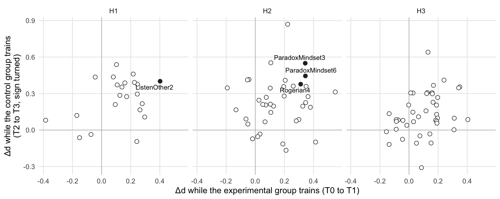

source("R/packages.R") # all packages (Chapter 1)
source("R/settings.R") # waves, conditions, folders (Chapter 1)
df <- readRDS("cache/df.rds") # one row per questionnaire (Chapter 2)
df_wide <- readRDS("cache/df_wide.rds") # one row per person (Chapter 2)
item_names <- names(select(df, ListenOther1:CompetenceNonFrustrated4))
source("R/scales.R") # the 23 scales (Chapter 2)
source("R/effect_sizes.R") # d_rm(), delta_d() (Chapter 9)
wording <- read_csv("data/item_wording.csv", show_col_types = FALSE)22. Item-level Δd
NoteAbout this chapter
The repeated-measures Δd of Chapter 9, item by item: how much each single item moved while each group trained, and how much of the first gain was left in September. Every scale goes through the same four steps: its items, the Δd of each item in three windows, the rank of its items among all 102, and where its items go in the post hoc structure. A section at the end ranks all items and puts the scales side by side. The ranking helps to choose items for later, shorter versions of the questionnaire. Descriptive; an appendix to the paper.
22.1 How each scale is examined
What is measured? For each of the 102 items (reverse-keyed items turned, Chapter 2), the repeated-measures Δd of Chapter 9: the d of the experimental group minus the d of the control group, each the mean change of the persons who answered at both waves divided by their standard deviation at the first wave, with a two-sided z-test. Three windows: while the experimental group trains (T0 to T1), its durability until September (T0 to T2), and while the control group trains (T2 to T3). In the last window the sign is turned, so that a positive value means a gain of the trained group in every window.
What happens to each scale? The same four steps, in the same order and in three parts: the items, their effects, and what follows. The diagram shows the path; the list below describes each step.
flowchart TB
subgraph P0["the items"]
direction LR
S1["<b>Step 1</b><br>the items"]
end
subgraph P1["the effects: both groups"]
direction LR
S2["<b>Step 2</b><br>Δd item by item"]
S2 --> S3["<b>Step 3</b><br>the rank"]
end
V["<b>Step 4</b><br>what follows"]
P0 --> P1
P1 --> V
classDef both fill:#f0eaf8,stroke:#8e6bbf,color:#1d1d1f
classDef verdict fill:#ffffff,stroke:#1d1d1f,color:#1d1d1f
class S1,S2,S3 both
class V verdict
style P0 fill:#fafafa,stroke:#8a8a8a
style P1 fill:#fafafa,stroke:#8a8a8a
The four steps in detail:
The items:
- The items. Which questions make up the scale, in their wording, and which of them were asked the other way round (reverse-keyed).
The effects:
- Δd item by item. The Δd and p of each item in the three windows; an item gains significantly when p < .05 and Δd > 0. With 102 items in a window, about five would reach p < .05 by chance alone, so the p-values describe the items; they are not corrected for testing many items.
- The rank. The ranking index, the mean Δd of the two training windows (T0 to T1 and T2 to T3), and the rank of each item among all 102 (1 = the largest index). Marked are the items that gain significantly in both training windows.
What follows:
- What follows. Where the items go in the post hoc structure of Chapters 15 to 18: set aside before the networks (Chapter 15: answers at the ceiling, negative wording, the block on attitudes toward women), unstable in the network (Chapter 16), set aside as redundant or for a weak discrimination (Chapter 17), or kept in the final pool (Chapter 17), on which Chapter 18 builds the composites and Chapter 19 the post hoc scores.
22.2 Data and tools
Which data? All questionnaires (df) and the wording of every item, loaded above, and the item pools of the post hoc structure: the pool before the networks and the stable items (Chapter 16), the items set aside as redundant or weakly discriminating, and the final pool (Chapter 17). Each item gets the step at which it leaves, or the final pool:
ega <- readRDS("cache/structure_ega.rds") # Chapter 16
pruned <- readRDS("cache/structure_irt.rds")$pruned # Chapter 17
final_pool <- readRDS("cache/structure_irt.rds")$final_pool # Chapter 17
post_hoc <- tibble(item = item_names) |>
left_join(select(pruned, item, poor, redundant), by = "item") |>
mutate(post_hoc = case_when(
!item %in% ega$pool ~ "set aside before the networks (Chapter 15)",
!item %in% ega$stable ~ "unstable in the network (Chapter 16)",
redundant ~ "redundant (Chapter 17)",
poor ~ "weak discrimination (Chapter 17)",
item %in% final_pool ~ "final pool (Chapters 17 and 18)")) |>
select(item, post_hoc)
post_hoc |>
count(post_hoc)| post_hoc | n |
|---|---|
| final pool (Chapters 17 and 18) | 47 |
| redundant (Chapter 17) | 6 |
| set aside before the networks (Chapter 15) | 31 |
| unstable in the network (Chapter 16) | 18 |
No item leaves for a weak discrimination; the six items that Chapter 17 sets aside are all redundant.
Which tools? The Δd of Chapter 9 (delta_d()), and one small function for the figure at the end:
# Repeated-measures effect sizes (Chapters 9 and 14)
#
# d_rm(): the change of one group in one window, in standard deviations
# before the window (Morris & DeShon, 2002). Change, SD and standard error
# all come from the persons who answered at both waves.
# delta_d(): the difference experimental minus control, with a z-test.
# With sd_pre = "all", d is divided by the SD of every questionnaire of the
# group at the first wave, not only of the pairs; the standard error stays
# that of the pairs.
d_rm <- \(data, outcome, pre, post, group, sd_pre = "pairs") {
waves <- data |>
filter(condition == group, Occasion %in% c(pre, post)) |>
select(id, Occasion, value = all_of(outcome))
pairs <- waves |>
pivot_wider(names_from = Occasion, values_from = value) |>
drop_na()
change <- mean(pairs[[post]] - pairs[[pre]])
d <- change / sd(pairs[[pre]])
r <- cor(pairs[[pre]], pairs[[post]])
n <- nrow(pairs)
se <- sqrt(2 * (1 - r) / n + d^2 / (2 * n))
sd_all <- sd(waves$value[waves$Occasion == pre], na.rm = TRUE)
tibble(d = if (sd_pre == "all") change / sd_all else d, se = se, n = n)
}
delta_d <- \(data, pre, post, outcomes, sd_pre = "pairs") {
map(outcomes, \(outcome) {
eg <- d_rm(data, outcome, pre, post, "Experimental", sd_pre)
cg <- d_rm(data, outcome, pre, post, "Control", sd_pre)
tibble(outcome = outcome,
d_EG = eg$d, n_EG = eg$n, d_CG = cg$d, n_CG = cg$n,
delta_d = eg$d - cg$d, se = sqrt(eg$se^2 + cg$se^2))
}) |>
list_rbind() |>
mutate(z = delta_d / se, p = 2 * pnorm(-abs(z)))
}# item numbers as "items 1 and 3", or "none"
numbered <- \(items) {
if (length(items) == 0) return("none")
numbers <- sort(as.integer(str_extract(items, "[0-9]+$")))
str_c(if (length(numbers) == 1) "item " else "items ",
str_flatten_comma(numbers, last = " and "))
}
# the path of a scale through the four steps, from the table of Δd above
# and the decisions of Chapters 15 to 17
item_path <- \(scale) {
items <- scale_items[[scale]]
effects <- item_effects |> filter(item %in% items)
gains <- \(d, p) effects$item[p < .05 & d > 0]
both <- intersect(gains(effects$delta_d_T0_T1, effects$p_T0_T1),
gains(effects$delta_d_T2_T3, effects$p_T2_T3))
fates <- post_hoc |>
filter(item %in% items) |>
count(post_hoc) |>
transmute(text = str_c(n, " ", str_remove(post_hoc, " \\(.*\\)$") |>
str_replace("^final pool", "in the final pool")))
tribble(
~Step, ~Question, ~Result, ~Next,
"2", "Which items gain while the experimental group trains?",
numbered(gains(effects$delta_d_T0_T1, effects$p_T0_T1)), "the next window",
"2", "Which items gain while the control group trains?",
numbered(gains(effects$delta_d_T2_T3, effects$p_T2_T3)), "the rank",
"3", "Which items gain in both windows, and how high do they rank?",
str_c(numbered(both), "; best rank ", min(effects$rank), " of 102"),
"what follows",
"4", "Where do the items go in the post hoc structure?",
str_flatten(fates$text, "; "), "")
}# Δd of each item while the experimental group trains against Δd while
# the control group trains (sign turned), one panel per hypothesis block;
# filled: a significant gain of the trained group in both windows
plot_windows <- \(effects) {
effects |>
mutate(block = scales$block[match(str_remove(item, "[0-9]+$"),
scales$scale)],
both = p_T0_T1 < .05 & delta_d_T0_T1 > 0 &
p_T2_T3 < .05 & delta_d_T2_T3 > 0) |>
ggplot(aes(x = delta_d_T0_T1, y = delta_d_T2_T3)) +
geom_hline(yintercept = 0, colour = "grey70", linewidth = .3) +
geom_vline(xintercept = 0, colour = "grey70", linewidth = .3) +
geom_point(aes(fill = both), shape = 21, size = 2.2,
colour = "grey25") +
ggrepel::geom_text_repel(data = \(d) filter(d, both),
aes(label = item), size = 3) +
scale_fill_manual(values = c(`TRUE` = "grey15", `FALSE` = "white"),
guide = "none") +
facet_wrap(~ block) +
labs(x = "Δd while the experimental group trains (T0 to T1)",
y = "Δd while the control group trains\n(T2 to T3, sign turned)") +
theme_minimal(base_size = 11) +
theme(panel.grid.minor = element_blank())
}Which effects? The Δd of all 102 items in the three windows, computed once here, since Step 3 ranks the items against each other:
item_effects <- tribble(
~pre, ~post, ~window, ~sign,
"T0", "T1", "T0_T1", 1,
"T0", "T2", "T0_T2", 1,
"T2", "T3", "T2_T3", -1
) |>
mutate(table = pmap(list(pre, post), \(a, b)
delta_d(df, a, b, item_names))) |>
unnest(table) |>
mutate(delta_d = sign * delta_d) |>
select(window, item = outcome, delta_d, p) |>
pivot_wider(names_from = window, values_from = c(delta_d, p)) |>
mutate(training_mean = (delta_d_T0_T1 + delta_d_T2_T3) / 2,
scale = str_remove(item, "[0-9]+$"),
scale = scales$label[match(scale, scales$scale)]) |>
arrange(desc(training_mean)) |>
mutate(rank = row_number(), .before = 1)22.3 Listening and togetherness (H1)
Which scales? The eight scales of the first hypothesis, with 22 items.
Others Listen to Me
Its path through the steps. One row per step below, from the table of Δd in 22.2; the effects compare both groups both groups:
| Step | Question | Result | Next |
|---|---|---|---|
| 2 | Which items gain while the experimental group trains? | items 1 and 2 | the next window |
| 2 | Which items gain while the control group trains? | item 2 | the rank |
| 3 | Which items gain in both windows, and how high do they rank? | item 2; best rank 4 of 102 | what follows |
| 4 | Where do the items go in the post hoc structure? | 1 in the final pool; 1 redundant |
The items · Step 1
Step 1 · The items
Which items measure it?
tibble(item = scale_items$ListenOther) |>
left_join(wording, by = "item")| item | wording | reversed |
|---|---|---|
| ListenOther1 | When people listen to me, They totally devote themselves to exploring my thoughts with me. | FALSE |
| ListenOther2 | When people listen to me, they put aside their thoughts and concerns completely. | FALSE |
Two items on how fully others attend when the respondent speaks; neither is reverse-keyed.
Next → Step 2, δd item by item: How much did each item move in the three windows?
The effects · Steps 2 and 3
Step 2 · Δd item by item both groups
How much did each item move in the three windows?
item_effects |>
filter(item %in% scale_items$ListenOther) |>
arrange(match(item, item_names)) |>
select(item, delta_d_T0_T1, p_T0_T1, delta_d_T0_T2, p_T0_T2,
delta_d_T2_T3, p_T2_T3) |>
mutate(across(where(is.double), \(x) round(x, 3)))| item | delta_d_T0_T1 | p_T0_T1 | delta_d_T0_T2 | p_T0_T2 | delta_d_T2_T3 | p_T2_T3 |
|---|---|---|---|---|---|---|
| ListenOther1 | 0.264 | 0.040 | 0.207 | 0.169 | 0.166 | 0.361 |
| ListenOther2 | 0.402 | 0.005 | 0.385 | 0.018 | 0.401 | 0.032 |
Item 2 gains in all three windows: Δd = 0.40 while the experimental group trains, 0.38 by September and 0.40 while the control group trains, each significant. Item 1 gains significantly only while the experimental group trains (Δd = 0.26, p = .040).
Next → Step 3, the rank: Where do its items stand among all 102?
Step 3 · The rank both groups
Where do its items stand among all 102?
item_effects |>
filter(item %in% scale_items$ListenOther) |>
mutate(both_windows = p_T0_T1 < .05 & delta_d_T0_T1 > 0 &
p_T2_T3 < .05 & delta_d_T2_T3 > 0) |>
select(rank, item, training_mean, both_windows) |>
mutate(training_mean = round(training_mean, 2))| rank | item | training_mean | both_windows |
|---|---|---|---|
| 4 | ListenOther2 | 0.40 | TRUE |
| 39 | ListenOther1 | 0.21 | FALSE |
Item 2 has rank 4 of 102 and is one of the items with a significant gain in both training windows; item 1 has rank 39.
Next → Step 4, what follows: Where do its items go in the post hoc structure?
What follows · Step 4
Step 4 · What follows
Where do its items go in the post hoc structure?
post_hoc |>
filter(item %in% scale_items$ListenOther)| item | post_hoc |
|---|---|
| ListenOther1 | final pool (Chapters 17 and 18) |
| ListenOther2 | redundant (Chapter 17) |
Item 1 stays in the final pool. Item 2 is set aside as redundant (Chapter 17): the item with the larger and more lasting gain of the scale does not enter the post hoc scores of Chapter 19.
I Listen
Its path through the steps. One row per step below, from the table of Δd in 22.2; the effects compare both groups both groups:
| Step | Question | Result | Next |
|---|---|---|---|
| 2 | Which items gain while the experimental group trains? | none | the next window |
| 2 | Which items gain while the control group trains? | item 1 | the rank |
| 3 | Which items gain in both windows, and how high do they rank? | none; best rank 11 of 102 | what follows |
| 4 | Where do the items go in the post hoc structure? | 2 in the final pool |
The items · Step 1
Step 1 · The items
Which items measure it?
tibble(item = scale_items$ListenSelf) |>
left_join(wording, by = "item")| item | wording | reversed |
|---|---|---|
| ListenSelf1 | When I listen to a person talking to me, I totally devote myself to exploring their thoughts with them. | FALSE |
| ListenSelf2 | When I listen to a person talking to me, I put aside my thoughts and concerns completely. | FALSE |
Two items on how the respondent listens: exploring the speaker’s thoughts, and putting one’s own aside; neither is reverse-keyed.
Next → Step 2, δd item by item: How much did each item move in the three windows?
The effects · Steps 2 and 3
Step 2 · Δd item by item both groups
How much did each item move in the three windows?
item_effects |>
filter(item %in% scale_items$ListenSelf) |>
arrange(match(item, item_names)) |>
select(item, delta_d_T0_T1, p_T0_T1, delta_d_T0_T2, p_T0_T2,
delta_d_T2_T3, p_T2_T3) |>
mutate(across(where(is.double), \(x) round(x, 3)))| item | delta_d_T0_T1 | p_T0_T1 | delta_d_T0_T2 | p_T0_T2 | delta_d_T2_T3 | p_T2_T3 |
|---|---|---|---|---|---|---|
| ListenSelf1 | 0.217 | 0.066 | 0.235 | 0.129 | 0.460 | 0.012 |
| ListenSelf2 | 0.246 | 0.067 | 0.184 | 0.249 | 0.377 | 0.063 |
While the experimental group trains, both items gain more in the trained group (Δd = 0.22 and 0.25) and just miss significance (p = .066 and .067). While the control group trains, item 1 gains significantly (Δd = 0.46, p = .012), item 2 just misses (p = .063).
Next → Step 3, the rank: Where do its items stand among all 102?
Step 3 · The rank both groups
Where do its items stand among all 102?
item_effects |>
filter(item %in% scale_items$ListenSelf) |>
mutate(both_windows = p_T0_T1 < .05 & delta_d_T0_T1 > 0 &
p_T2_T3 < .05 & delta_d_T2_T3 > 0) |>
select(rank, item, training_mean, both_windows) |>
mutate(training_mean = round(training_mean, 2))| rank | item | training_mean | both_windows |
|---|---|---|---|
| 11 | ListenSelf1 | 0.34 | FALSE |
| 16 | ListenSelf2 | 0.31 | FALSE |
They have ranks 11 and 16; neither gains significantly in both windows.
Next → Step 4, what follows: Where do its items go in the post hoc structure?
What follows · Step 4
Step 4 · What follows
Where do its items go in the post hoc structure?
post_hoc |>
filter(item %in% scale_items$ListenSelf)| item | post_hoc |
|---|---|
| ListenSelf1 | final pool (Chapters 17 and 18) |
| ListenSelf2 | final pool (Chapters 17 and 18) |
Both items stay in the final pool.
Understood
Its path through the steps. One row per step below, from the table of Δd in 22.2; the effects compare both groups both groups:
| Step | Question | Result | Next |
|---|---|---|---|
| 2 | Which items gain while the experimental group trains? | none | the next window |
| 2 | Which items gain while the control group trains? | item 1 | the rank |
| 3 | Which items gain in both windows, and how high do they rank? | none; best rank 27 of 102 | what follows |
| 4 | Where do the items go in the post hoc structure? | 1 in the final pool |
The items · Step 1
Step 1 · The items
Which items measure it?
tibble(item = scale_items$Understood) |>
left_join(wording, by = "item")| item | wording | reversed |
|---|---|---|
| Understood1 | During my interactions with others, I feel they understand me. | FALSE |
A single item: whether others understand the respondent in their interactions; it is not reverse-keyed.
Next → Step 2, δd item by item: How much did each item move in the three windows?
The effects · Steps 2 and 3
Step 2 · Δd item by item both groups
How much did each item move in the three windows?
item_effects |>
filter(item %in% scale_items$Understood) |>
arrange(match(item, item_names)) |>
select(item, delta_d_T0_T1, p_T0_T1, delta_d_T0_T2, p_T0_T2,
delta_d_T2_T3, p_T2_T3) |>
mutate(across(where(is.double), \(x) round(x, 3)))| item | delta_d_T0_T1 | p_T0_T1 | delta_d_T0_T2 | p_T0_T2 | delta_d_T2_T3 | p_T2_T3 |
|---|---|---|---|---|---|---|
| Understood1 | 0.081 | 0.493 | 0.299 | 0.055 | 0.436 | 0.007 |
The item hardly moves while the experimental group trains (Δd = 0.08, p = .493). By September it is higher in the trained group, just short of significance (Δd = 0.30, p = .055); while the control group trains, it gains significantly (Δd = 0.44, p = .007).
Next → Step 3, the rank: Where do its items stand among all 102?
Step 3 · The rank both groups
Where do its items stand among all 102?
item_effects |>
filter(item %in% scale_items$Understood) |>
mutate(both_windows = p_T0_T1 < .05 & delta_d_T0_T1 > 0 &
p_T2_T3 < .05 & delta_d_T2_T3 > 0) |>
select(rank, item, training_mean, both_windows) |>
mutate(training_mean = round(training_mean, 2))| rank | item | training_mean | both_windows |
|---|---|---|---|
| 27 | Understood1 | 0.26 | FALSE |
It has rank 27; its ranking index rests on the second training window.
Next → Step 4, what follows: Where do its items go in the post hoc structure?
What follows · Step 4
Step 4 · What follows
Where do its items go in the post hoc structure?
post_hoc |>
filter(item %in% scale_items$Understood)| item | post_hoc |
|---|---|
| Understood1 | final pool (Chapters 17 and 18) |
The item stays in the final pool.
Kama Muta
Its path through the steps. One row per step below, from the table of Δd in 22.2; the effects compare both groups both groups:
| Step | Question | Result | Next |
|---|---|---|---|
| 2 | Which items gain while the experimental group trains? | none | the next window |
| 2 | Which items gain while the control group trains? | item 2 | the rank |
| 3 | Which items gain in both windows, and how high do they rank? | none; best rank 46 of 102 | what follows |
| 4 | Where do the items go in the post hoc structure? | 1 in the final pool; 1 redundant |
The items · Step 1
Step 1 · The items
Which items measure it?
tibble(item = scale_items$KamaMuta) |>
left_join(wording, by = "item")| item | wording | reversed |
|---|---|---|
| KamaMuta1 | I tend to feel moved | FALSE |
| KamaMuta2 | I tend to feel touched | FALSE |
Two items on feeling moved and feeling touched; neither is reverse-keyed.
Next → Step 2, δd item by item: How much did each item move in the three windows?
The effects · Steps 2 and 3
Step 2 · Δd item by item both groups
How much did each item move in the three windows?
item_effects |>
filter(item %in% scale_items$KamaMuta) |>
arrange(match(item, item_names)) |>
select(item, delta_d_T0_T1, p_T0_T1, delta_d_T0_T2, p_T0_T2,
delta_d_T2_T3, p_T2_T3) |>
mutate(across(where(is.double), \(x) round(x, 3)))| item | delta_d_T0_T1 | p_T0_T1 | delta_d_T0_T2 | p_T0_T2 | delta_d_T2_T3 | p_T2_T3 |
|---|---|---|---|---|---|---|
| KamaMuta1 | 0.094 | 0.465 | -0.096 | 0.591 | 0.210 | 0.266 |
| KamaMuta2 | -0.044 | 0.734 | -0.065 | 0.676 | 0.435 | 0.021 |
Neither item moves while the experimental group trains (Δd = 0.09 and -0.04). While the control group trains, item 2 gains significantly (Δd = 0.44, p = .021), item 1 does not (Δd = 0.21).
Next → Step 3, the rank: Where do its items stand among all 102?
Step 3 · The rank both groups
Where do its items stand among all 102?
item_effects |>
filter(item %in% scale_items$KamaMuta) |>
mutate(both_windows = p_T0_T1 < .05 & delta_d_T0_T1 > 0 &
p_T2_T3 < .05 & delta_d_T2_T3 > 0) |>
select(rank, item, training_mean, both_windows) |>
mutate(training_mean = round(training_mean, 2))| rank | item | training_mean | both_windows |
|---|---|---|---|
| 46 | KamaMuta2 | 0.20 | FALSE |
| 59 | KamaMuta1 | 0.15 | FALSE |
Item 2 has rank 46, item 1 rank 59.
Next → Step 4, what follows: Where do its items go in the post hoc structure?
What follows · Step 4
Step 4 · What follows
Where do its items go in the post hoc structure?
post_hoc |>
filter(item %in% scale_items$KamaMuta)| item | post_hoc |
|---|---|
| KamaMuta1 | final pool (Chapters 17 and 18) |
| KamaMuta2 | redundant (Chapter 17) |
Item 1 stays in the final pool; item 2, nearly the same question, is set aside as redundant (Chapter 17).
Positivity Resonance
Its path through the steps. One row per step below, from the table of Δd in 22.2; the effects compare both groups both groups:
| Step | Question | Result | Next |
|---|---|---|---|
| 2 | Which items gain while the experimental group trains? | items 2 and 4 | the next window |
| 2 | Which items gain while the control group trains? | items 5 and 8 | the rank |
| 3 | Which items gain in both windows, and how high do they rank? | none; best rank 18 of 102 | what follows |
| 4 | Where do the items go in the post hoc structure? | 8 in the final pool |
The items · Step 1
Step 1 · The items
Which items measure it?
tibble(item = scale_items$Resonance) |>
left_join(wording, by = "item")| item | wording | reversed |
|---|---|---|
| Resonance1 | [Share of your interactions in which you…] are able to attune to other people’s words and experiences? | FALSE |
| Resonance2 | [Share of your interactions in which you…] experience a ‘flow of conversation’ with other people? | FALSE |
| Resonance3 | [Share of your interactions in which you…] feel energized? | FALSE |
| Resonance4 | [Share of your interactions in which you…] you and other people share a mutual understanding of one another? | FALSE |
| Resonance5 | [Share of your interactions in which you…] you and other people are mutually responsive to one another’s needs? | FALSE |
| Resonance6 | [Share of your interactions in which you…] you feel a sense of mutual trust with other people? | FALSE |
| Resonance7 | [Share of your interactions in which you…] you and other people mutually focus on the ‘best side’ of one another? | FALSE |
| Resonance8 | [Share of your interactions in which you…] you feel ‘in sync’ with other people? | FALSE |
Eight items on the share of interactions with attunement, flow, energy, mutual understanding, responsiveness, trust, a focus on the best in each other, and feeling in sync; none is reverse-keyed.
Next → Step 2, δd item by item: How much did each item move in the three windows?
The effects · Steps 2 and 3
Step 2 · Δd item by item both groups
How much did each item move in the three windows?
item_effects |>
filter(item %in% scale_items$Resonance) |>
arrange(match(item, item_names)) |>
select(item, delta_d_T0_T1, p_T0_T1, delta_d_T0_T2, p_T0_T2,
delta_d_T2_T3, p_T2_T3) |>
mutate(across(where(is.double), \(x) round(x, 3)))| item | delta_d_T0_T1 | p_T0_T1 | delta_d_T0_T2 | p_T0_T2 | delta_d_T2_T3 | p_T2_T3 |
|---|---|---|---|---|---|---|
| Resonance1 | 0.242 | 0.066 | 0.251 | 0.157 | -0.094 | 0.614 |
| Resonance2 | 0.297 | 0.039 | 0.335 | 0.041 | 0.107 | 0.536 |
| Resonance3 | 0.172 | 0.208 | -0.100 | 0.565 | 0.275 | 0.121 |
| Resonance4 | 0.279 | 0.039 | 0.073 | 0.649 | 0.217 | 0.242 |
| Resonance5 | 0.160 | 0.243 | 0.111 | 0.460 | 0.387 | 0.045 |
| Resonance6 | 0.107 | 0.368 | -0.049 | 0.758 | 0.371 | 0.065 |
| Resonance7 | 0.140 | 0.267 | -0.122 | 0.468 | 0.353 | 0.068 |
| Resonance8 | 0.226 | 0.085 | 0.269 | 0.120 | 0.391 | 0.032 |
All eight items gain more in the trained group while the experimental group trains (Δd from 0.11 to 0.30), but only items 2 and 4 significantly. While the control group trains, items 5 and 8 gain significantly; item 1 alone points the other way (Δd = -0.09).
Next → Step 3, the rank: Where do its items stand among all 102?
Step 3 · The rank both groups
Where do its items stand among all 102?
item_effects |>
filter(item %in% scale_items$Resonance) |>
mutate(both_windows = p_T0_T1 < .05 & delta_d_T0_T1 > 0 &
p_T2_T3 < .05 & delta_d_T2_T3 > 0) |>
select(rank, item, training_mean, both_windows) |>
mutate(training_mean = round(training_mean, 2))| rank | item | training_mean | both_windows |
|---|---|---|---|
| 18 | Resonance8 | 0.31 | FALSE |
| 23 | Resonance5 | 0.27 | FALSE |
| 28 | Resonance4 | 0.25 | FALSE |
| 29 | Resonance7 | 0.25 | FALSE |
| 31 | Resonance6 | 0.24 | FALSE |
| 37 | Resonance3 | 0.22 | FALSE |
| 43 | Resonance2 | 0.20 | FALSE |
| 73 | Resonance1 | 0.07 | FALSE |
The items have ranks from 18 (item 8) to 73 (item 1); none gains significantly in both windows.
Next → Step 4, what follows: Where do its items go in the post hoc structure?
What follows · Step 4
Step 4 · What follows
Where do its items go in the post hoc structure?
post_hoc |>
filter(item %in% scale_items$Resonance)| item | post_hoc |
|---|---|
| Resonance1 | final pool (Chapters 17 and 18) |
| Resonance2 | final pool (Chapters 17 and 18) |
| Resonance3 | final pool (Chapters 17 and 18) |
| Resonance4 | final pool (Chapters 17 and 18) |
| Resonance5 | final pool (Chapters 17 and 18) |
| Resonance6 | final pool (Chapters 17 and 18) |
| Resonance7 | final pool (Chapters 17 and 18) |
| Resonance8 | final pool (Chapters 17 and 18) |
All eight items stay in the final pool.
Belongingness
Its path through the steps. One row per step below, from the table of Δd in 22.2; the effects compare both groups both groups:
| Step | Question | Result | Next |
|---|---|---|---|
| 2 | Which items gain while the experimental group trains? | none | the next window |
| 2 | Which items gain while the control group trains? | item 1 | the rank |
| 3 | Which items gain in both windows, and how high do they rank? | none; best rank 14 of 102 | what follows |
| 4 | Where do the items go in the post hoc structure? | 3 unstable in the network |
The items · Step 1
Step 1 · The items
Which items measure it?
tibble(item = scale_items$Belongingness) |>
left_join(wording, by = "item")| item | wording | reversed |
|---|---|---|
| Belongingness1 | I have a sense of belonging. | FALSE |
| Belongingness2 | I feel accepted by others. | FALSE |
| Belongingness3 | I feel connected with others. | FALSE |
Three items on belonging, being accepted and feeling connected; none is reverse-keyed.
Next → Step 2, δd item by item: How much did each item move in the three windows?
The effects · Steps 2 and 3
Step 2 · Δd item by item both groups
How much did each item move in the three windows?
item_effects |>
filter(item %in% scale_items$Belongingness) |>
arrange(match(item, item_names)) |>
select(item, delta_d_T0_T1, p_T0_T1, delta_d_T0_T2, p_T0_T2,
delta_d_T2_T3, p_T2_T3) |>
mutate(across(where(is.double), \(x) round(x, 3)))| item | delta_d_T0_T1 | p_T0_T1 | delta_d_T0_T2 | p_T0_T2 | delta_d_T2_T3 | p_T2_T3 |
|---|---|---|---|---|---|---|
| Belongingness1 | 0.102 | 0.417 | 0.265 | 0.109 | 0.538 | 0.002 |
| Belongingness2 | 0.126 | 0.353 | 0.165 | 0.313 | 0.285 | 0.070 |
| Belongingness3 | 0.245 | 0.059 | 0.259 | 0.125 | 0.296 | 0.074 |
No item gains significantly while the experimental group trains; item 3 comes closest (Δd = 0.25, p = .059). While the control group trains, item 1 does (Δd = 0.54, p = .002).
Next → Step 3, the rank: Where do its items stand among all 102?
Step 3 · The rank both groups
Where do its items stand among all 102?
item_effects |>
filter(item %in% scale_items$Belongingness) |>
mutate(both_windows = p_T0_T1 < .05 & delta_d_T0_T1 > 0 &
p_T2_T3 < .05 & delta_d_T2_T3 > 0) |>
select(rank, item, training_mean, both_windows) |>
mutate(training_mean = round(training_mean, 2))| rank | item | training_mean | both_windows |
|---|---|---|---|
| 14 | Belongingness1 | 0.32 | FALSE |
| 24 | Belongingness3 | 0.27 | FALSE |
| 41 | Belongingness2 | 0.21 | FALSE |
They have ranks 14, 24 and 41; none gains significantly in both windows.
Next → Step 4, what follows: Where do its items go in the post hoc structure?
What follows · Step 4
Step 4 · What follows
Where do its items go in the post hoc structure?
post_hoc |>
filter(item %in% scale_items$Belongingness)| item | post_hoc |
|---|---|
| Belongingness1 | unstable in the network (Chapter 16) |
| Belongingness2 | unstable in the network (Chapter 16) |
| Belongingness3 | unstable in the network (Chapter 16) |
All three items move between communities in the network and leave the pool in Chapter 16: Belongingness has no item in the post hoc structure.
No Alienation
Its path through the steps. One row per step below, from the table of Δd in 22.2; the effects compare both groups both groups:
| Step | Question | Result | Next |
|---|---|---|---|
| 2 | Which items gain while the experimental group trains? | none | the next window |
| 2 | Which items gain while the control group trains? | none | the rank |
| 3 | Which items gain in both windows, and how high do they rank? | none; best rank 92 of 102 | what follows |
| 4 | Where do the items go in the post hoc structure? | 2 set aside before the networks |
The items · Step 1
Step 1 · The items
Which items measure it?
tibble(item = scale_items$NoAlienation) |>
left_join(wording, by = "item")| item | wording | reversed |
|---|---|---|
| NoAlienation1 | Nowadays things are so confusing that you sometimes do not know where you stand. | TRUE |
| NoAlienation2 | Nowadays things are so complex that you sometimes do not know what is going on. | TRUE |
Two items on not knowing where one stands or what is going on. Both were asked the other way round and turned (Chapter 2), so that a higher answer means less alienation.
Next → Step 2, δd item by item: How much did each item move in the three windows?
The effects · Steps 2 and 3
Step 2 · Δd item by item both groups
How much did each item move in the three windows?
item_effects |>
filter(item %in% scale_items$NoAlienation) |>
arrange(match(item, item_names)) |>
select(item, delta_d_T0_T1, p_T0_T1, delta_d_T0_T2, p_T0_T2,
delta_d_T2_T3, p_T2_T3) |>
mutate(across(where(is.double), \(x) round(x, 3)))| item | delta_d_T0_T1 | p_T0_T1 | delta_d_T0_T2 | p_T0_T2 | delta_d_T2_T3 | p_T2_T3 |
|---|---|---|---|---|---|---|
| NoAlienation1 | -0.170 | 0.172 | 0.354 | 0.030 | 0.120 | 0.486 |
| NoAlienation2 | -0.384 | 0.002 | -0.028 | 0.849 | 0.081 | 0.650 |
While the experimental group trains, item 2 moves significantly against the training (Δd = -0.38, p = .002), item 1 the same way without significance (Δd = -0.17). By September item 1 is higher in the trained group (Δd = 0.35, p = .030).
Next → Step 3, the rank: Where do its items stand among all 102?
Step 3 · The rank both groups
Where do its items stand among all 102?
item_effects |>
filter(item %in% scale_items$NoAlienation) |>
mutate(both_windows = p_T0_T1 < .05 & delta_d_T0_T1 > 0 &
p_T2_T3 < .05 & delta_d_T2_T3 > 0) |>
select(rank, item, training_mean, both_windows) |>
mutate(training_mean = round(training_mean, 2))| rank | item | training_mean | both_windows |
|---|---|---|---|
| 92 | NoAlienation1 | -0.03 | FALSE |
| 102 | NoAlienation2 | -0.15 | FALSE |
They have ranks 92 and 102: item 2 has the lowest ranking index of all 102 items.
Next → Step 4, what follows: Where do its items go in the post hoc structure?
What follows · Step 4
Step 4 · What follows
Where do its items go in the post hoc structure?
post_hoc |>
filter(item %in% scale_items$NoAlienation)| item | post_hoc |
|---|---|
| NoAlienation1 | set aside before the networks (Chapter 15) |
| NoAlienation2 | set aside before the networks (Chapter 15) |
Both items are negatively worded and leave the pool before the networks (Chapter 15).
No Isolation
Its path through the steps. One row per step below, from the table of Δd in 22.2; the effects compare both groups both groups:
| Step | Question | Result | Next |
|---|---|---|---|
| 2 | Which items gain while the experimental group trains? | none | the next window |
| 2 | Which items gain while the control group trains? | none | the rank |
| 3 | Which items gain in both windows, and how high do they rank? | none; best rank 96 of 102 | what follows |
| 4 | Where do the items go in the post hoc structure? | 2 set aside before the networks |
The items · Step 1
Step 1 · The items
Which items measure it?
tibble(item = scale_items$NoIsolation) |>
left_join(wording, by = "item")| item | wording | reversed |
|---|---|---|
| NoIsolation1 | Finding real friends is becoming more and more difficult nowadays. | TRUE |
| NoIsolation2 | Relationships are getting more and more unstable. | TRUE |
Two items on how hard it is to find real friends and how unstable relationships are; both were turned (Chapter 2), so that a higher answer means less isolation.
Next → Step 2, δd item by item: How much did each item move in the three windows?
The effects · Steps 2 and 3
Step 2 · Δd item by item both groups
How much did each item move in the three windows?
item_effects |>
filter(item %in% scale_items$NoIsolation) |>
arrange(match(item, item_names)) |>
select(item, delta_d_T0_T1, p_T0_T1, delta_d_T0_T2, p_T0_T2,
delta_d_T2_T3, p_T2_T3) |>
mutate(across(where(is.double), \(x) round(x, 3)))| item | delta_d_T0_T1 | p_T0_T1 | delta_d_T0_T2 | p_T0_T2 | delta_d_T2_T3 | p_T2_T3 |
|---|---|---|---|---|---|---|
| NoIsolation1 | -0.151 | 0.187 | -0.157 | 0.301 | -0.063 | 0.697 |
| NoIsolation2 | -0.073 | 0.532 | -0.065 | 0.612 | -0.036 | 0.825 |
Both items lie slightly below zero in all three windows (Δd from -0.16 to -0.04); none is significant.
Next → Step 3, the rank: Where do its items stand among all 102?
Step 3 · The rank both groups
Where do its items stand among all 102?
item_effects |>
filter(item %in% scale_items$NoIsolation) |>
mutate(both_windows = p_T0_T1 < .05 & delta_d_T0_T1 > 0 &
p_T2_T3 < .05 & delta_d_T2_T3 > 0) |>
select(rank, item, training_mean, both_windows) |>
mutate(training_mean = round(training_mean, 2))| rank | item | training_mean | both_windows |
|---|---|---|---|
| 96 | NoIsolation2 | -0.05 | FALSE |
| 99 | NoIsolation1 | -0.11 | FALSE |
They have ranks 96 (item 2) and 99 (item 1), among the last of all items.
Next → Step 4, what follows: Where do its items go in the post hoc structure?
What follows · Step 4
Step 4 · What follows
Where do its items go in the post hoc structure?
post_hoc |>
filter(item %in% scale_items$NoIsolation)| item | post_hoc |
|---|---|
| NoIsolation1 | set aside before the networks (Chapter 15) |
| NoIsolation2 | set aside before the networks (Chapter 15) |
Both items are negatively worded and leave the pool before the networks (Chapter 15).
22.4 Cognitive complexity (H2)
Which scales? The five scales of the second hypothesis, with 38 items.
Rogerian Schema
Its path through the steps. One row per step below, from the table of Δd in 22.2; the effects compare both groups both groups:
| Step | Question | Result | Next |
|---|---|---|---|
| 2 | Which items gain while the experimental group trains? | items 1, 2, 3 and 4 | the next window |
| 2 | Which items gain while the control group trains? | items 4 and 5 | the rank |
| 3 | Which items gain in both windows, and how high do they rank? | item 4; best rank 9 of 102 | what follows |
| 4 | Where do the items go in the post hoc structure? | 4 in the final pool; 2 redundant; 3 set aside before the networks |
The items · Step 1
Step 1 · The items
Which items measure it?
tibble(item = scale_items$Rogerian) |>
left_join(wording, by = "item")| item | wording | reversed |
|---|---|---|
| Rogerian1 | A good listener gains insight into the speaker’s perspective. | FALSE |
| Rogerian2 | A good listener achieves a clear understanding of the speaker’s arguments. | FALSE |
| Rogerian3 | A good listener comprehends the speaker’s attitudes, feelings, and perceptions. | FALSE |
| Rogerian4 | A good listener facilitates a process that generates new knowledge. | FALSE |
| Rogerian5 | A good listener enhances joint creativity. | FALSE |
| Rogerian6 | A good listener helps solve disagreements. | FALSE |
| Rogerian7 | A good listener interferes with productivity. | TRUE |
| Rogerian8 | A good listener makes other people feel uncomfortable. | TRUE |
| Rogerian9 | A good listener sometimes derails the team’s work process. | TRUE |
Nine items that complete a statement about a good listener; items 7 to 9 describe what listening costs and were turned (Chapter 2).
Next → Step 2, δd item by item: How much did each item move in the three windows?
The effects · Steps 2 and 3
Step 2 · Δd item by item both groups
How much did each item move in the three windows?
item_effects |>
filter(item %in% scale_items$Rogerian) |>
arrange(match(item, item_names)) |>
select(item, delta_d_T0_T1, p_T0_T1, delta_d_T0_T2, p_T0_T2,
delta_d_T2_T3, p_T2_T3) |>
mutate(across(where(is.double), \(x) round(x, 3)))| item | delta_d_T0_T1 | p_T0_T1 | delta_d_T0_T2 | p_T0_T2 | delta_d_T2_T3 | p_T2_T3 |
|---|---|---|---|---|---|---|
| Rogerian1 | 0.299 | 0.008 | 0.128 | 0.367 | 0.086 | 0.674 |
| Rogerian2 | 0.261 | 0.022 | 0.168 | 0.288 | 0.361 | 0.062 |
| Rogerian3 | 0.281 | 0.017 | -0.011 | 0.947 | 0.076 | 0.666 |
| Rogerian4 | 0.312 | 0.011 | -0.037 | 0.820 | 0.377 | 0.007 |
| Rogerian5 | 0.206 | 0.121 | 0.029 | 0.871 | 0.409 | 0.007 |
| Rogerian6 | 0.103 | 0.502 | 0.149 | 0.395 | 0.212 | 0.271 |
| Rogerian7 | 0.211 | 0.114 | 0.106 | 0.528 | -0.166 | 0.394 |
| Rogerian8 | -0.019 | 0.887 | 0.045 | 0.786 | -0.072 | 0.677 |
| Rogerian9 | 0.189 | 0.165 | 0.153 | 0.298 | -0.114 | 0.500 |
While the experimental group trains, items 1 to 4 gain significantly (Δd from 0.26 to 0.31); while the control group trains, items 4 and 5 do. The reverse-keyed items 7 to 9 point against the training while the control group trains.
Next → Step 3, the rank: Where do its items stand among all 102?
Step 3 · The rank both groups
Where do its items stand among all 102?
item_effects |>
filter(item %in% scale_items$Rogerian) |>
mutate(both_windows = p_T0_T1 < .05 & delta_d_T0_T1 > 0 &
p_T2_T3 < .05 & delta_d_T2_T3 > 0) |>
select(rank, item, training_mean, both_windows) |>
mutate(training_mean = round(training_mean, 2))| rank | item | training_mean | both_windows |
|---|---|---|---|
| 9 | Rogerian4 | 0.34 | TRUE |
| 17 | Rogerian2 | 0.31 | FALSE |
| 19 | Rogerian5 | 0.31 | FALSE |
| 47 | Rogerian1 | 0.19 | FALSE |
| 50 | Rogerian3 | 0.18 | FALSE |
| 56 | Rogerian6 | 0.16 | FALSE |
| 77 | Rogerian9 | 0.04 | FALSE |
| 78 | Rogerian7 | 0.02 | FALSE |
| 95 | Rogerian8 | -0.05 | FALSE |
Item 4 has rank 9 and gains significantly in both windows. Items 7 to 9 rank lowest of the scale (77, 78 and 95).
Next → Step 4, what follows: Where do its items go in the post hoc structure?
What follows · Step 4
Step 4 · What follows
Where do its items go in the post hoc structure?
post_hoc |>
filter(item %in% scale_items$Rogerian)| item | post_hoc |
|---|---|
| Rogerian1 | redundant (Chapter 17) |
| Rogerian2 | final pool (Chapters 17 and 18) |
| Rogerian3 | redundant (Chapter 17) |
| Rogerian4 | final pool (Chapters 17 and 18) |
| Rogerian5 | final pool (Chapters 17 and 18) |
| Rogerian6 | final pool (Chapters 17 and 18) |
| Rogerian7 | set aside before the networks (Chapter 15) |
| Rogerian8 | set aside before the networks (Chapter 15) |
| Rogerian9 | set aside before the networks (Chapter 15) |
Items 2, 4, 5 and 6 stay in the final pool. Items 1 and 3 are set aside as redundant (Chapter 17), items 7 to 9 for their negative wording (Chapter 15).
Paradox Mindset
Its path through the steps. One row per step below, from the table of Δd in 22.2; the effects compare both groups both groups:
| Step | Question | Result | Next |
|---|---|---|---|
| 2 | Which items gain while the experimental group trains? | items 3, 4, 6, 7, 8 and 9 | the next window |
| 2 | Which items gain while the control group trains? | items 2, 3 and 6 | the rank |
| 3 | Which items gain in both windows, and how high do they rank? | items 3 and 6; best rank 2 of 102 | what follows |
| 4 | Where do the items go in the post hoc structure? | 8 in the final pool; 1 unstable in the network |
The items · Step 1
Step 1 · The items
Which items measure it?
tibble(item = scale_items$ParadoxMindset) |>
left_join(wording, by = "item")| item | wording | reversed |
|---|---|---|
| ParadoxMindset1 | When I consider conflicting perspectives, I gain a better understanding of an issue. | FALSE |
| ParadoxMindset2 | I am comfortable dealing with conflicting demands at the same time. | FALSE |
| ParadoxMindset3 | Accepting contradictions is essential for my success. | FALSE |
| ParadoxMindset4 | Tension between ideas energizes me. | FALSE |
| ParadoxMindset5 | I enjoy it when I manage to pursue contradictory goals. | FALSE |
| ParadoxMindset6 | I often experience myself as simultaneously embracing conflicting demands. | FALSE |
| ParadoxMindset7 | I am comfortable working on tasks that contradict each other. | FALSE |
| ParadoxMindset8 | I feel uplifted when I realize that two opposites can be true. | FALSE |
| ParadoxMindset9 | I feel energized when I manage to address contradictory issues. | FALSE |
Nine items on conflicting demands, contradictions and tensions; none is reverse-keyed.
Next → Step 2, δd item by item: How much did each item move in the three windows?
The effects · Steps 2 and 3
Step 2 · Δd item by item both groups
How much did each item move in the three windows?
item_effects |>
filter(item %in% scale_items$ParadoxMindset) |>
arrange(match(item, item_names)) |>
select(item, delta_d_T0_T1, p_T0_T1, delta_d_T0_T2, p_T0_T2,
delta_d_T2_T3, p_T2_T3) |>
mutate(across(where(is.double), \(x) round(x, 3)))| item | delta_d_T0_T1 | p_T0_T1 | delta_d_T0_T2 | p_T0_T2 | delta_d_T2_T3 | p_T2_T3 |
|---|---|---|---|---|---|---|
| ParadoxMindset1 | 0.107 | 0.408 | -0.018 | 0.908 | 0.145 | 0.455 |
| ParadoxMindset2 | 0.195 | 0.116 | 0.236 | 0.169 | 0.357 | 0.042 |
| ParadoxMindset3 | 0.343 | 0.007 | 0.269 | 0.122 | 0.549 | 0.003 |
| ParadoxMindset4 | 0.326 | 0.006 | -0.067 | 0.663 | 0.196 | 0.192 |
| ParadoxMindset5 | 0.199 | 0.138 | -0.071 | 0.644 | 0.279 | 0.084 |
| ParadoxMindset6 | 0.344 | 0.007 | 0.207 | 0.210 | 0.445 | 0.014 |
| ParadoxMindset7 | 0.349 | 0.008 | 0.262 | 0.129 | 0.359 | 0.073 |
| ParadoxMindset8 | 0.378 | 0.003 | 0.002 | 0.990 | 0.187 | 0.355 |
| ParadoxMindset9 | 0.346 | 0.007 | -0.111 | 0.546 | 0.225 | 0.212 |
Every item gains more in the trained group in both training windows. While the experimental group trains, 6 of the nine do so significantly (items 3, 4, 6, 7, 8, and 9); while the control group trains, items 2, 3, and 6.
Next → Step 3, the rank: Where do its items stand among all 102?
Step 3 · The rank both groups
Where do its items stand among all 102?
item_effects |>
filter(item %in% scale_items$ParadoxMindset) |>
mutate(both_windows = p_T0_T1 < .05 & delta_d_T0_T1 > 0 &
p_T2_T3 < .05 & delta_d_T2_T3 > 0) |>
select(rank, item, training_mean, both_windows) |>
mutate(training_mean = round(training_mean, 2))| rank | item | training_mean | both_windows |
|---|---|---|---|
| 2 | ParadoxMindset3 | 0.45 | TRUE |
| 5 | ParadoxMindset6 | 0.39 | TRUE |
| 7 | ParadoxMindset7 | 0.35 | FALSE |
| 20 | ParadoxMindset9 | 0.29 | FALSE |
| 21 | ParadoxMindset8 | 0.28 | FALSE |
| 22 | ParadoxMindset2 | 0.28 | FALSE |
| 26 | ParadoxMindset4 | 0.26 | FALSE |
| 32 | ParadoxMindset5 | 0.24 | FALSE |
| 67 | ParadoxMindset1 | 0.13 | FALSE |
Items 3 and 6 have ranks 2 and 5 of all 102 items and gain significantly in both windows; item 1 ranks lowest of the scale (67).
Next → Step 4, what follows: Where do its items go in the post hoc structure?
What follows · Step 4
Step 4 · What follows
Where do its items go in the post hoc structure?
post_hoc |>
filter(item %in% scale_items$ParadoxMindset)| item | post_hoc |
|---|---|
| ParadoxMindset1 | unstable in the network (Chapter 16) |
| ParadoxMindset2 | final pool (Chapters 17 and 18) |
| ParadoxMindset3 | final pool (Chapters 17 and 18) |
| ParadoxMindset4 | final pool (Chapters 17 and 18) |
| ParadoxMindset5 | final pool (Chapters 17 and 18) |
| ParadoxMindset6 | final pool (Chapters 17 and 18) |
| ParadoxMindset7 | final pool (Chapters 17 and 18) |
| ParadoxMindset8 | final pool (Chapters 17 and 18) |
| ParadoxMindset9 | final pool (Chapters 17 and 18) |
Items 2 to 9 stay in the final pool, among them both items with a gain in both windows; item 1 is unstable in the network (Chapter 16).
Intellectual Humility
Its path through the steps. One row per step below, from the table of Δd in 22.2; the effects compare both groups both groups:
| Step | Question | Result | Next |
|---|---|---|---|
| 2 | Which items gain while the experimental group trains? | none | the next window |
| 2 | Which items gain while the control group trains? | item 4 | the rank |
| 3 | Which items gain in both windows, and how high do they rank? | none; best rank 48 of 102 | what follows |
| 4 | Where do the items go in the post hoc structure? | 5 in the final pool; 1 redundant |
The items · Step 1
Step 1 · The items
Which items measure it?
tibble(item = scale_items$IntellectualHumility) |>
left_join(wording, by = "item")| item | wording | reversed |
|---|---|---|
| IntellectualHumility1 | I question my own opinions, positions, and viewpoints because they could be wrong. | FALSE |
| IntellectualHumility2 | I reconsider my opinions when presented with new evidence. | FALSE |
| IntellectualHumility3 | I recognize the value in opinions that are different from my own. | FALSE |
| IntellectualHumility4 | I accept that my beliefs and attitudes may be wrong. | FALSE |
| IntellectualHumility5 | In the face of conflicting evidence, I am open to changing my opinions. | FALSE |
| IntellectualHumility6 | I like finding out new information that differs from what I already think is true. | FALSE |
Six items on questioning one’s own views and being open to those of others; none is reverse-keyed.
Next → Step 2, δd item by item: How much did each item move in the three windows?
The effects · Steps 2 and 3
Step 2 · Δd item by item both groups
How much did each item move in the three windows?
item_effects |>
filter(item %in% scale_items$IntellectualHumility) |>
arrange(match(item, item_names)) |>
select(item, delta_d_T0_T1, p_T0_T1, delta_d_T0_T2, p_T0_T2,
delta_d_T2_T3, p_T2_T3) |>
mutate(across(where(is.double), \(x) round(x, 3)))| item | delta_d_T0_T1 | p_T0_T1 | delta_d_T0_T2 | p_T0_T2 | delta_d_T2_T3 | p_T2_T3 |
|---|---|---|---|---|---|---|
| IntellectualHumility1 | 0.017 | 0.902 | -0.143 | 0.396 | -0.054 | 0.763 |
| IntellectualHumility2 | -0.133 | 0.354 | -0.336 | 0.035 | 0.167 | 0.285 |
| IntellectualHumility3 | 0.025 | 0.863 | -0.195 | 0.178 | 0.245 | 0.152 |
| IntellectualHumility4 | -0.043 | 0.749 | 0.086 | 0.579 | 0.416 | 0.028 |
| IntellectualHumility5 | 0.125 | 0.399 | 0.004 | 0.980 | 0.197 | 0.246 |
| IntellectualHumility6 | -0.064 | 0.612 | -0.048 | 0.762 | 0.091 | 0.589 |
While the experimental group trains, no item moves (Δd from -0.13 to 0.13, none significant). By September item 2 is lower in the trained group (Δd = -0.34, p = .035); while the control group trains, item 4 gains significantly (Δd = 0.42, p = .028).
Next → Step 3, the rank: Where do its items stand among all 102?
Step 3 · The rank both groups
Where do its items stand among all 102?
item_effects |>
filter(item %in% scale_items$IntellectualHumility) |>
mutate(both_windows = p_T0_T1 < .05 & delta_d_T0_T1 > 0 &
p_T2_T3 < .05 & delta_d_T2_T3 > 0) |>
select(rank, item, training_mean, both_windows) |>
mutate(training_mean = round(training_mean, 2))| rank | item | training_mean | both_windows |
|---|---|---|---|
| 48 | IntellectualHumility4 | 0.19 | FALSE |
| 53 | IntellectualHumility5 | 0.16 | FALSE |
| 63 | IntellectualHumility3 | 0.14 | FALSE |
| 81 | IntellectualHumility2 | 0.02 | FALSE |
| 83 | IntellectualHumility6 | 0.01 | FALSE |
| 91 | IntellectualHumility1 | -0.02 | FALSE |
The items have ranks from 48 to 91; none gains significantly in both windows.
Next → Step 4, what follows: Where do its items go in the post hoc structure?
What follows · Step 4
Step 4 · What follows
Where do its items go in the post hoc structure?
post_hoc |>
filter(item %in% scale_items$IntellectualHumility)| item | post_hoc |
|---|---|
| IntellectualHumility1 | final pool (Chapters 17 and 18) |
| IntellectualHumility2 | redundant (Chapter 17) |
| IntellectualHumility3 | final pool (Chapters 17 and 18) |
| IntellectualHumility4 | final pool (Chapters 17 and 18) |
| IntellectualHumility5 | final pool (Chapters 17 and 18) |
| IntellectualHumility6 | final pool (Chapters 17 and 18) |
Items 1 and 3 to 6 stay in the final pool; item 2 is set aside as redundant (Chapter 17).
Tolerance Diversity
Its path through the steps. One row per step below, from the table of Δd in 22.2; the effects compare both groups both groups:
| Step | Question | Result | Next |
|---|---|---|---|
| 2 | Which items gain while the experimental group trains? | none | the next window |
| 2 | Which items gain while the control group trains? | item 1 | the rank |
| 3 | Which items gain in both windows, and how high do they rank? | none; best rank 49 of 102 | what follows |
| 4 | Where do the items go in the post hoc structure? | 4 in the final pool; 1 set aside before the networks |
The items · Step 1
Step 1 · The items
Which items measure it?
tibble(item = scale_items$ToleranceDiversity) |>
left_join(wording, by = "item")| item | wording | reversed |
|---|---|---|
| ToleranceDiversity1 | Roma/Sinti women threaten the values of Serbia. | TRUE |
| ToleranceDiversity2 | Roma/Sinti women enrich the prosperity of Serbia. | FALSE |
| ToleranceDiversity3 | I would not mind Roma/Sinti women in my residential area. | FALSE |
| ToleranceDiversity4 | I sympathize with Roma/Sinti women. | FALSE |
| ToleranceDiversity5 | I enjoy meeting people whose background is different from mine. | FALSE |
Five items, four on Roma and Sinti women and one on meeting people of another background; item 1, on Roma and Sinti women as a threat, was turned (Chapter 2).
Next → Step 2, δd item by item: How much did each item move in the three windows?
The effects · Steps 2 and 3
Step 2 · Δd item by item both groups
How much did each item move in the three windows?
item_effects |>
filter(item %in% scale_items$ToleranceDiversity) |>
arrange(match(item, item_names)) |>
select(item, delta_d_T0_T1, p_T0_T1, delta_d_T0_T2, p_T0_T2,
delta_d_T2_T3, p_T2_T3) |>
mutate(across(where(is.double), \(x) round(x, 3)))| item | delta_d_T0_T1 | p_T0_T1 | delta_d_T0_T2 | p_T0_T2 | delta_d_T2_T3 | p_T2_T3 |
|---|---|---|---|---|---|---|
| ToleranceDiversity1 | -0.193 | 0.142 | 0.060 | 0.687 | 0.346 | 0.032 |
| ToleranceDiversity2 | 0.067 | 0.570 | -0.141 | 0.326 | 0.068 | 0.641 |
| ToleranceDiversity3 | -0.054 | 0.717 | 0.022 | 0.905 | 0.412 | 0.055 |
| ToleranceDiversity4 | -0.051 | 0.681 | -0.438 | 0.002 | 0.049 | 0.766 |
| ToleranceDiversity5 | 0.032 | 0.810 | -0.253 | 0.102 | -0.033 | 0.863 |
No item moves significantly while the experimental group trains. By September item 4 is clearly lower in the trained group (Δd = -0.44, p = .002). While the control group trains, item 1 gains significantly (Δd = 0.35), item 3 nearly so (p = .055).
Next → Step 3, the rank: Where do its items stand among all 102?
Step 3 · The rank both groups
Where do its items stand among all 102?
item_effects |>
filter(item %in% scale_items$ToleranceDiversity) |>
mutate(both_windows = p_T0_T1 < .05 & delta_d_T0_T1 > 0 &
p_T2_T3 < .05 & delta_d_T2_T3 > 0) |>
select(rank, item, training_mean, both_windows) |>
mutate(training_mean = round(training_mean, 2))| rank | item | training_mean | both_windows |
|---|---|---|---|
| 49 | ToleranceDiversity3 | 0.18 | FALSE |
| 72 | ToleranceDiversity1 | 0.08 | FALSE |
| 74 | ToleranceDiversity2 | 0.07 | FALSE |
| 86 | ToleranceDiversity5 | 0.00 | FALSE |
| 88 | ToleranceDiversity4 | 0.00 | FALSE |
The items have ranks from 49 to 88; none gains significantly in both windows.
Next → Step 4, what follows: Where do its items go in the post hoc structure?
What follows · Step 4
Step 4 · What follows
Where do its items go in the post hoc structure?
post_hoc |>
filter(item %in% scale_items$ToleranceDiversity)| item | post_hoc |
|---|---|
| ToleranceDiversity1 | set aside before the networks (Chapter 15) |
| ToleranceDiversity2 | final pool (Chapters 17 and 18) |
| ToleranceDiversity3 | final pool (Chapters 17 and 18) |
| ToleranceDiversity4 | final pool (Chapters 17 and 18) |
| ToleranceDiversity5 | final pool (Chapters 17 and 18) |
Items 2 to 5 stay in the final pool; item 1, negatively worded, leaves it before the networks (Chapter 15).
Women Attitude
Its path through the steps. One row per step below, from the table of Δd in 22.2; the effects compare both groups both groups:
| Step | Question | Result | Next |
|---|---|---|---|
| 2 | Which items gain while the experimental group trains? | items 2, 6 and 7 | the next window |
| 2 | Which items gain while the control group trains? | items 4, 5 and 9 | the rank |
| 3 | Which items gain in both windows, and how high do they rank? | none; best rank 1 of 102 | what follows |
| 4 | Where do the items go in the post hoc structure? | 9 set aside before the networks |
The items · Step 1
Step 1 · The items
Which items measure it?
tibble(item = scale_items$womenAttitude) |>
left_join(wording, by = "item")| item | wording | reversed |
|---|---|---|
| womenAttitude1 | Every woman should be free to choose whether to complete secondary school. | FALSE |
| womenAttitude2 | Every woman should be free to choose whether to work for pay. | FALSE |
| womenAttitude3 | Every woman should be free to choose to prioritize her work for pay over domestic duties. | FALSE |
| womenAttitude4 | Every woman should be free to choose what to do with any money that she earns. | FALSE |
| womenAttitude5 | Every woman should be free to choose to purchase land, a house, or other valuable goods. | FALSE |
| womenAttitude6 | Every woman should be free to choose when to get married. | FALSE |
| womenAttitude7 | Every woman should be free to choose to divorce or end her marriage. | FALSE |
| womenAttitude8 | Every woman should be free to choose whether and when to have children. | FALSE |
| womenAttitude9 | Every woman should be free to choose not to have any more children. | FALSE |
Nine items, each saying that every woman should be free to choose: schooling, paid work, money, property, marriage, divorce and children; none is reverse-keyed.
Next → Step 2, δd item by item: How much did each item move in the three windows?
The effects · Steps 2 and 3
Step 2 · Δd item by item both groups
How much did each item move in the three windows?
item_effects |>
filter(item %in% scale_items$womenAttitude) |>
arrange(match(item, item_names)) |>
select(item, delta_d_T0_T1, p_T0_T1, delta_d_T0_T2, p_T0_T2,
delta_d_T2_T3, p_T2_T3) |>
mutate(across(where(is.double), \(x) round(x, 3)))| item | delta_d_T0_T1 | p_T0_T1 | delta_d_T0_T2 | p_T0_T2 | delta_d_T2_T3 | p_T2_T3 |
|---|---|---|---|---|---|---|
| womenAttitude1 | 0.075 | 0.542 | 0.194 | 0.206 | 0.269 | 0.102 |
| womenAttitude2 | 0.414 | 0.004 | 0.236 | 0.149 | -0.099 | 0.625 |
| womenAttitude3 | 0.072 | 0.607 | 0.014 | 0.936 | 0.206 | 0.304 |
| womenAttitude4 | 0.107 | 0.419 | 0.200 | 0.277 | 0.553 | 0.001 |
| womenAttitude5 | 0.103 | 0.490 | 0.195 | 0.255 | 0.345 | 0.037 |
| womenAttitude6 | 0.550 | 0.001 | 0.257 | 0.139 | 0.313 | 0.076 |
| womenAttitude7 | 0.363 | 0.016 | 0.217 | 0.191 | 0.275 | 0.119 |
| womenAttitude8 | 0.051 | 0.708 | 0.030 | 0.867 | 0.210 | 0.291 |
| womenAttitude9 | 0.222 | 0.175 | 0.056 | 0.762 | 0.869 | 0.000 |
While the experimental group trains, items 2, 6, and 7 gain significantly, item 6 most (Δd = 0.55); while the control group trains, items 4, 5, and 9, item 9 with the largest Δd of any item in any window (0.87). Items 6 and 7 sit at the ceiling, with T0 means above 9.7 and the smallest spread of the block, and the other items close to it (Chapter 15). With so little spread before the window, a small change counts as a large d.
Next → Step 3, the rank: Where do its items stand among all 102?
Step 3 · The rank both groups
Where do its items stand among all 102?
item_effects |>
filter(item %in% scale_items$womenAttitude) |>
mutate(both_windows = p_T0_T1 < .05 & delta_d_T0_T1 > 0 &
p_T2_T3 < .05 & delta_d_T2_T3 > 0) |>
select(rank, item, training_mean, both_windows) |>
mutate(training_mean = round(training_mean, 2))| rank | item | training_mean | both_windows |
|---|---|---|---|
| 1 | womenAttitude9 | 0.55 | FALSE |
| 3 | womenAttitude6 | 0.43 | FALSE |
| 12 | womenAttitude4 | 0.33 | FALSE |
| 15 | womenAttitude7 | 0.32 | FALSE |
| 36 | womenAttitude5 | 0.22 | FALSE |
| 51 | womenAttitude1 | 0.17 | FALSE |
| 57 | womenAttitude2 | 0.16 | FALSE |
| 61 | womenAttitude3 | 0.14 | FALSE |
| 66 | womenAttitude8 | 0.13 | FALSE |
Item 9 has rank 1 of all 102 items and item 6 rank 3, yet neither gains significantly in both windows: item 9 moves in the second window only, item 6 in the first.
Next → Step 4, what follows: Where do its items go in the post hoc structure?
What follows · Step 4
Step 4 · What follows
Where do its items go in the post hoc structure?
post_hoc |>
filter(item %in% scale_items$womenAttitude)| item | post_hoc |
|---|---|
| womenAttitude1 | set aside before the networks (Chapter 15) |
| womenAttitude2 | set aside before the networks (Chapter 15) |
| womenAttitude3 | set aside before the networks (Chapter 15) |
| womenAttitude4 | set aside before the networks (Chapter 15) |
| womenAttitude5 | set aside before the networks (Chapter 15) |
| womenAttitude6 | set aside before the networks (Chapter 15) |
| womenAttitude7 | set aside before the networks (Chapter 15) |
| womenAttitude8 | set aside before the networks (Chapter 15) |
| womenAttitude9 | set aside before the networks (Chapter 15) |
The whole block leaves the pool before the networks (Chapter 15): items 6 and 7 for their ceiling, the others with the block. Items 9 and 6, first and third in the ranking, are not part of the post hoc structure.
22.5 Well-being (H3)
Which scales? The ten scales of the third hypothesis, with 42 items.
Flourishing
Its path through the steps. One row per step below, from the table of Δd in 22.2; the effects compare both groups both groups:
| Step | Question | Result | Next |
|---|---|---|---|
| 2 | Which items gain while the experimental group trains? | item 7 | the next window |
| 2 | Which items gain while the control group trains? | items 1 and 4 | the rank |
| 3 | Which items gain in both windows, and how high do they rank? | none; best rank 6 of 102 | what follows |
| 4 | Where do the items go in the post hoc structure? | 4 in the final pool; 1 redundant; 2 set aside before the networks |
The items · Step 1
Step 1 · The items
Which items measure it?
tibble(item = scale_items$Flourishing) |>
left_join(wording, by = "item")| item | wording | reversed |
|---|---|---|
| Flourishing1 | Overall, how satisfied are you with life as a whole these days? (0 = Not satisfied at all, 10 = Completely satisfied) | FALSE |
| Flourishing2 | On average, how happy have you felt during the last 7 days? (0 = Extremely unhappy, 10 = Extremely happy) | FALSE |
| Flourishing3 | I expect more good things in my life than bad (0 = Strongly disagree, 10 = Strongly agree) | FALSE |
| Flourishing4 | How would you rate your overall mental health? (0 = Poor, 10 = Excellent) | FALSE |
| Flourishing5 | Are you depressed? (0 = Not at all depressed, 10 = Very depressed) | TRUE |
| Flourishing6 | Do you have anxiety that keeps you from doing the things in life that you need to do? (0 = Never, 10 = Always) | TRUE |
| Flourishing7 | In stressful situations, I manage my emotions so that I am still in control of myself (0 = Strongly disagree, 10 = Strongly agree | FALSE |
Seven items on life satisfaction, happiness, optimism, mental health, depression, anxiety and keeping one’s emotions under control; items 5 and 6, on depression and anxiety, were turned (Chapter 2).
Next → Step 2, δd item by item: How much did each item move in the three windows?
The effects · Steps 2 and 3
Step 2 · Δd item by item both groups
How much did each item move in the three windows?
item_effects |>
filter(item %in% scale_items$Flourishing) |>
arrange(match(item, item_names)) |>
select(item, delta_d_T0_T1, p_T0_T1, delta_d_T0_T2, p_T0_T2,
delta_d_T2_T3, p_T2_T3) |>
mutate(across(where(is.double), \(x) round(x, 3)))| item | delta_d_T0_T1 | p_T0_T1 | delta_d_T0_T2 | p_T0_T2 | delta_d_T2_T3 | p_T2_T3 |
|---|---|---|---|---|---|---|
| Flourishing1 | 0.240 | 0.062 | 0.063 | 0.710 | 0.410 | 0.013 |
| Flourishing2 | 0.027 | 0.833 | -0.146 | 0.398 | 0.305 | 0.067 |
| Flourishing3 | 0.190 | 0.173 | 0.037 | 0.817 | 0.072 | 0.702 |
| Flourishing4 | 0.131 | 0.261 | 0.212 | 0.126 | 0.640 | 0.000 |
| Flourishing5 | -0.045 | 0.741 | 0.040 | 0.815 | -0.076 | 0.708 |
| Flourishing6 | -0.155 | 0.204 | 0.003 | 0.986 | -0.014 | 0.938 |
| Flourishing7 | 0.349 | 0.008 | 0.186 | 0.300 | 0.354 | 0.064 |
While the experimental group trains, only item 7 gains significantly (Δd = 0.35); while the control group trains, items 1 and 4 do, item 4 by Δd = 0.64. The reverse-keyed items 5 and 6 point against the training in both windows.
Next → Step 3, the rank: Where do its items stand among all 102?
Step 3 · The rank both groups
Where do its items stand among all 102?
item_effects |>
filter(item %in% scale_items$Flourishing) |>
mutate(both_windows = p_T0_T1 < .05 & delta_d_T0_T1 > 0 &
p_T2_T3 < .05 & delta_d_T2_T3 > 0) |>
select(rank, item, training_mean, both_windows) |>
mutate(training_mean = round(training_mean, 2))| rank | item | training_mean | both_windows |
|---|---|---|---|
| 6 | Flourishing4 | 0.39 | FALSE |
| 8 | Flourishing7 | 0.35 | FALSE |
| 13 | Flourishing1 | 0.33 | FALSE |
| 52 | Flourishing2 | 0.17 | FALSE |
| 65 | Flourishing3 | 0.13 | FALSE |
| 97 | Flourishing5 | -0.06 | FALSE |
| 98 | Flourishing6 | -0.08 | FALSE |
Items 4, 7 and 1 have ranks 6, 8 and 13, items 5 and 6 ranks 97 and 98; none gains significantly in both windows.
Next → Step 4, what follows: Where do its items go in the post hoc structure?
What follows · Step 4
Step 4 · What follows
Where do its items go in the post hoc structure?
post_hoc |>
filter(item %in% scale_items$Flourishing)| item | post_hoc |
|---|---|
| Flourishing1 | final pool (Chapters 17 and 18) |
| Flourishing2 | redundant (Chapter 17) |
| Flourishing3 | final pool (Chapters 17 and 18) |
| Flourishing4 | final pool (Chapters 17 and 18) |
| Flourishing5 | set aside before the networks (Chapter 15) |
| Flourishing6 | set aside before the networks (Chapter 15) |
| Flourishing7 | final pool (Chapters 17 and 18) |
Items 1, 3, 4 and 7 stay in the final pool; item 2 is set aside as redundant (Chapter 17), items 5 and 6 for their negative wording (Chapter 15). Item 1, on life satisfaction, is the item that Chapter 19 follows on its own.
Autonomy Satisfaction
Its path through the steps. One row per step below, from the table of Δd in 22.2; the effects compare both groups both groups:
| Step | Question | Result | Next |
|---|---|---|---|
| 2 | Which items gain while the experimental group trains? | none | the next window |
| 2 | Which items gain while the control group trains? | item 3 | the rank |
| 3 | Which items gain in both windows, and how high do they rank? | none; best rank 25 of 102 | what follows |
| 4 | Where do the items go in the post hoc structure? | 3 in the final pool; 1 unstable in the network |
The items · Step 1
Step 1 · The items
Which items measure it?
tibble(item = scale_items$AutonomySatisfaction) |>
left_join(wording, by = "item")| item | wording | reversed |
|---|---|---|
| AutonomySatisfaction1 | I feel a sense of choice and freedom in the things I undertake. | FALSE |
| AutonomySatisfaction2 | I feel that my decisions reflect what I really want. | FALSE |
| AutonomySatisfaction3 | I feel my choices express who I really am. | FALSE |
| AutonomySatisfaction4 | I feel I have been doing what really interests me. | FALSE |
Four items on a sense of choice and on doing what one really wants; none is reverse-keyed.
Next → Step 2, δd item by item: How much did each item move in the three windows?
The effects · Steps 2 and 3
Step 2 · Δd item by item both groups
How much did each item move in the three windows?
item_effects |>
filter(item %in% scale_items$AutonomySatisfaction) |>
arrange(match(item, item_names)) |>
select(item, delta_d_T0_T1, p_T0_T1, delta_d_T0_T2, p_T0_T2,
delta_d_T2_T3, p_T2_T3) |>
mutate(across(where(is.double), \(x) round(x, 3)))| item | delta_d_T0_T1 | p_T0_T1 | delta_d_T0_T2 | p_T0_T2 | delta_d_T2_T3 | p_T2_T3 |
|---|---|---|---|---|---|---|
| AutonomySatisfaction1 | 0.184 | 0.150 | 0.268 | 0.083 | 0.081 | 0.661 |
| AutonomySatisfaction2 | 0.165 | 0.197 | -0.088 | 0.602 | 0.228 | 0.262 |
| AutonomySatisfaction3 | 0.168 | 0.170 | 0.025 | 0.886 | 0.367 | 0.040 |
| AutonomySatisfaction4 | 0.143 | 0.215 | -0.045 | 0.778 | -0.032 | 0.826 |
All four items gain a little more in the trained group while the experimental group trains (Δd from 0.14 to 0.18), none significantly; while the control group trains, item 3 does (Δd = 0.37, p = .040).
Next → Step 3, the rank: Where do its items stand among all 102?
Step 3 · The rank both groups
Where do its items stand among all 102?
item_effects |>
filter(item %in% scale_items$AutonomySatisfaction) |>
mutate(both_windows = p_T0_T1 < .05 & delta_d_T0_T1 > 0 &
p_T2_T3 < .05 & delta_d_T2_T3 > 0) |>
select(rank, item, training_mean, both_windows) |>
mutate(training_mean = round(training_mean, 2))| rank | item | training_mean | both_windows |
|---|---|---|---|
| 25 | AutonomySatisfaction3 | 0.27 | FALSE |
| 44 | AutonomySatisfaction2 | 0.20 | FALSE |
| 64 | AutonomySatisfaction1 | 0.13 | FALSE |
| 75 | AutonomySatisfaction4 | 0.06 | FALSE |
The items have ranks from 25 to 75; none gains significantly in both windows.
Next → Step 4, what follows: Where do its items go in the post hoc structure?
What follows · Step 4
Step 4 · What follows
Where do its items go in the post hoc structure?
post_hoc |>
filter(item %in% scale_items$AutonomySatisfaction)| item | post_hoc |
|---|---|
| AutonomySatisfaction1 | unstable in the network (Chapter 16) |
| AutonomySatisfaction2 | final pool (Chapters 17 and 18) |
| AutonomySatisfaction3 | final pool (Chapters 17 and 18) |
| AutonomySatisfaction4 | final pool (Chapters 17 and 18) |
Items 2 to 4 stay in the final pool; item 1 is unstable in the network (Chapter 16).
Competence Satisfaction
Its path through the steps. One row per step below, from the table of Δd in 22.2; the effects compare both groups both groups:
| Step | Question | Result | Next |
|---|---|---|---|
| 2 | Which items gain while the experimental group trains? | none | the next window |
| 2 | Which items gain while the control group trains? | none | the rank |
| 3 | Which items gain in both windows, and how high do they rank? | none; best rank 34 of 102 | what follows |
| 4 | Where do the items go in the post hoc structure? | 4 in the final pool |
The items · Step 1
Step 1 · The items
Which items measure it?
tibble(item = scale_items$CompetenceSatisfaction) |>
left_join(wording, by = "item")| item | wording | reversed |
|---|---|---|
| CompetenceSatisfaction1 | I feel confident that I can do things well. | FALSE |
| CompetenceSatisfaction2 | I feel capable at what I do. | FALSE |
| CompetenceSatisfaction3 | I feel competent to achieve my goals. | FALSE |
| CompetenceSatisfaction4 | I feel I can successfully complete difficult tasks. | FALSE |
Four items on feeling confident, capable and competent; none is reverse-keyed.
Next → Step 2, δd item by item: How much did each item move in the three windows?
The effects · Steps 2 and 3
Step 2 · Δd item by item both groups
How much did each item move in the three windows?
item_effects |>
filter(item %in% scale_items$CompetenceSatisfaction) |>
arrange(match(item, item_names)) |>
select(item, delta_d_T0_T1, p_T0_T1, delta_d_T0_T2, p_T0_T2,
delta_d_T2_T3, p_T2_T3) |>
mutate(across(where(is.double), \(x) round(x, 3)))| item | delta_d_T0_T1 | p_T0_T1 | delta_d_T0_T2 | p_T0_T2 | delta_d_T2_T3 | p_T2_T3 |
|---|---|---|---|---|---|---|
| CompetenceSatisfaction1 | 0.197 | 0.079 | 0.097 | 0.516 | 0.268 | 0.108 |
| CompetenceSatisfaction2 | 0.196 | 0.077 | 0.192 | 0.181 | 0.099 | 0.524 |
| CompetenceSatisfaction3 | 0.192 | 0.140 | 0.010 | 0.950 | 0.057 | 0.740 |
| CompetenceSatisfaction4 | 0.190 | 0.070 | -0.049 | 0.748 | 0.128 | 0.308 |
All four items gain about the same while the experimental group trains (Δd from 0.19 to 0.20), each short of significance; while the control group trains, none gains significantly (Δd at most 0.27).
Next → Step 3, the rank: Where do its items stand among all 102?
Step 3 · The rank both groups
Where do its items stand among all 102?
item_effects |>
filter(item %in% scale_items$CompetenceSatisfaction) |>
mutate(both_windows = p_T0_T1 < .05 & delta_d_T0_T1 > 0 &
p_T2_T3 < .05 & delta_d_T2_T3 > 0) |>
select(rank, item, training_mean, both_windows) |>
mutate(training_mean = round(training_mean, 2))| rank | item | training_mean | both_windows |
|---|---|---|---|
| 34 | CompetenceSatisfaction1 | 0.23 | FALSE |
| 54 | CompetenceSatisfaction4 | 0.16 | FALSE |
| 60 | CompetenceSatisfaction2 | 0.15 | FALSE |
| 68 | CompetenceSatisfaction3 | 0.12 | FALSE |
The items have ranks from 34 to 68; none gains significantly in both windows.
Next → Step 4, what follows: Where do its items go in the post hoc structure?
What follows · Step 4
Step 4 · What follows
Where do its items go in the post hoc structure?
post_hoc |>
filter(item %in% scale_items$CompetenceSatisfaction)| item | post_hoc |
|---|---|
| CompetenceSatisfaction1 | final pool (Chapters 17 and 18) |
| CompetenceSatisfaction2 | final pool (Chapters 17 and 18) |
| CompetenceSatisfaction3 | final pool (Chapters 17 and 18) |
| CompetenceSatisfaction4 | final pool (Chapters 17 and 18) |
All four items stay in the final pool.
Autonomy Non-Frustrated
Its path through the steps. One row per step below, from the table of Δd in 22.2; the effects compare both groups both groups:
| Step | Question | Result | Next |
|---|---|---|---|
| 2 | Which items gain while the experimental group trains? | none | the next window |
| 2 | Which items gain while the control group trains? | none | the rank |
| 3 | Which items gain in both windows, and how high do they rank? | none; best rank 89 of 102 | what follows |
| 4 | Where do the items go in the post hoc structure? | 4 set aside before the networks |
The items · Step 1
Step 1 · The items
Which items measure it?
tibble(item = scale_items$AutonomyNonFrustrated) |>
left_join(wording, by = "item")| item | wording | reversed |
|---|---|---|
| AutonomyNonFrustrated1 | Most of the things I do feel like “I have to”. | TRUE |
| AutonomyNonFrustrated2 | I feel forced to do many things I wouldn’t choose to do. | TRUE |
| AutonomyNonFrustrated3 | I feel pressured to do too many things. | TRUE |
| AutonomyNonFrustrated4 | My daily activities feel like a chain of obligations. | TRUE |
Four items on feeling obliged and pressured; all four were turned (Chapter 2), so that a higher answer means less frustration.
Next → Step 2, δd item by item: How much did each item move in the three windows?
The effects · Steps 2 and 3
Step 2 · Δd item by item both groups
How much did each item move in the three windows?
item_effects |>
filter(item %in% scale_items$AutonomyNonFrustrated) |>
arrange(match(item, item_names)) |>
select(item, delta_d_T0_T1, p_T0_T1, delta_d_T0_T2, p_T0_T2,
delta_d_T2_T3, p_T2_T3) |>
mutate(across(where(is.double), \(x) round(x, 3)))| item | delta_d_T0_T1 | p_T0_T1 | delta_d_T0_T2 | p_T0_T2 | delta_d_T2_T3 | p_T2_T3 |
|---|---|---|---|---|---|---|
| AutonomyNonFrustrated1 | 0.086 | 0.505 | 0.065 | 0.688 | -0.309 | 0.087 |
| AutonomyNonFrustrated2 | -0.086 | 0.501 | 0.119 | 0.449 | 0.072 | 0.701 |
| AutonomyNonFrustrated3 | -0.088 | 0.454 | 0.030 | 0.845 | 0.085 | 0.580 |
| AutonomyNonFrustrated4 | -0.136 | 0.253 | -0.091 | 0.554 | -0.118 | 0.529 |
None of the four items moves significantly in any window; three of them lie below zero while the experimental group trains.
Next → Step 3, the rank: Where do its items stand among all 102?
Step 3 · The rank both groups
Where do its items stand among all 102?
item_effects |>
filter(item %in% scale_items$AutonomyNonFrustrated) |>
mutate(both_windows = p_T0_T1 < .05 & delta_d_T0_T1 > 0 &
p_T2_T3 < .05 & delta_d_T2_T3 > 0) |>
select(rank, item, training_mean, both_windows) |>
mutate(training_mean = round(training_mean, 2))| rank | item | training_mean | both_windows |
|---|---|---|---|
| 89 | AutonomyNonFrustrated3 | 0.00 | FALSE |
| 90 | AutonomyNonFrustrated2 | -0.01 | FALSE |
| 100 | AutonomyNonFrustrated1 | -0.11 | FALSE |
| 101 | AutonomyNonFrustrated4 | -0.13 | FALSE |
They have ranks 89, 90, 100, and 101, among the last of all items.
Next → Step 4, what follows: Where do its items go in the post hoc structure?
What follows · Step 4
Step 4 · What follows
Where do its items go in the post hoc structure?
post_hoc |>
filter(item %in% scale_items$AutonomyNonFrustrated)| item | post_hoc |
|---|---|
| AutonomyNonFrustrated1 | set aside before the networks (Chapter 15) |
| AutonomyNonFrustrated2 | set aside before the networks (Chapter 15) |
| AutonomyNonFrustrated3 | set aside before the networks (Chapter 15) |
| AutonomyNonFrustrated4 | set aside before the networks (Chapter 15) |
All four items are negatively worded and leave the pool before the networks (Chapter 15).
Competence Non-Frustrated
Its path through the steps. One row per step below, from the table of Δd in 22.2; the effects compare both groups both groups:
| Step | Question | Result | Next |
|---|---|---|---|
| 2 | Which items gain while the experimental group trains? | none | the next window |
| 2 | Which items gain while the control group trains? | none | the rank |
| 3 | Which items gain in both windows, and how high do they rank? | none; best rank 80 of 102 | what follows |
| 4 | Where do the items go in the post hoc structure? | 4 set aside before the networks |
The items · Step 1
Step 1 · The items
Which items measure it?
tibble(item = scale_items$CompetenceNonFrustrated) |>
left_join(wording, by = "item")| item | wording | reversed |
|---|---|---|
| CompetenceNonFrustrated1 | I have serious doubts about whether I can do things well. | TRUE |
| CompetenceNonFrustrated2 | I feel disappointed with many of my performances. | TRUE |
| CompetenceNonFrustrated3 | I feel insecure about my abilities. | TRUE |
| CompetenceNonFrustrated4 | I feel like a failure because of the mistakes I make. | TRUE |
Four items on doubts, disappointment, insecurity and feeling like a failure; all four were turned (Chapter 2).
Next → Step 2, δd item by item: How much did each item move in the three windows?
The effects · Steps 2 and 3
Step 2 · Δd item by item both groups
How much did each item move in the three windows?
item_effects |>
filter(item %in% scale_items$CompetenceNonFrustrated) |>
arrange(match(item, item_names)) |>
select(item, delta_d_T0_T1, p_T0_T1, delta_d_T0_T2, p_T0_T2,
delta_d_T2_T3, p_T2_T3) |>
mutate(across(where(is.double), \(x) round(x, 3)))| item | delta_d_T0_T1 | p_T0_T1 | delta_d_T0_T2 | p_T0_T2 | delta_d_T2_T3 | p_T2_T3 |
|---|---|---|---|---|---|---|
| CompetenceNonFrustrated1 | -0.074 | 0.563 | 0.106 | 0.463 | 0.083 | 0.640 |
| CompetenceNonFrustrated2 | -0.042 | 0.745 | 0.211 | 0.194 | 0.079 | 0.651 |
| CompetenceNonFrustrated3 | 0.051 | 0.676 | 0.206 | 0.153 | -0.108 | 0.572 |
| CompetenceNonFrustrated4 | -0.136 | 0.245 | 0.160 | 0.296 | 0.135 | 0.347 |
None of the four items moves significantly in any window.
Next → Step 3, the rank: Where do its items stand among all 102?
Step 3 · The rank both groups
Where do its items stand among all 102?
item_effects |>
filter(item %in% scale_items$CompetenceNonFrustrated) |>
mutate(both_windows = p_T0_T1 < .05 & delta_d_T0_T1 > 0 &
p_T2_T3 < .05 & delta_d_T2_T3 > 0) |>
select(rank, item, training_mean, both_windows) |>
mutate(training_mean = round(training_mean, 2))| rank | item | training_mean | both_windows |
|---|---|---|---|
| 80 | CompetenceNonFrustrated2 | 0.02 | FALSE |
| 85 | CompetenceNonFrustrated1 | 0.00 | FALSE |
| 87 | CompetenceNonFrustrated4 | 0.00 | FALSE |
| 93 | CompetenceNonFrustrated3 | -0.03 | FALSE |
They have ranks from 80 to 93.
Next → Step 4, what follows: Where do its items go in the post hoc structure?
What follows · Step 4
Step 4 · What follows
Where do its items go in the post hoc structure?
post_hoc |>
filter(item %in% scale_items$CompetenceNonFrustrated)| item | post_hoc |
|---|---|
| CompetenceNonFrustrated1 | set aside before the networks (Chapter 15) |
| CompetenceNonFrustrated2 | set aside before the networks (Chapter 15) |
| CompetenceNonFrustrated3 | set aside before the networks (Chapter 15) |
| CompetenceNonFrustrated4 | set aside before the networks (Chapter 15) |
All four items are negatively worded and leave the pool before the networks (Chapter 15).
Empowerment
Its path through the steps. One row per step below, from the table of Δd in 22.2; the effects compare both groups both groups:
| Step | Question | Result | Next |
|---|---|---|---|
| 2 | Which items gain while the experimental group trains? | items 1 and 2 | the next window |
| 2 | Which items gain while the control group trains? | none | the rank |
| 3 | Which items gain in both windows, and how high do they rank? | none; best rank 30 of 102 | what follows |
| 4 | Where do the items go in the post hoc structure? | 2 in the final pool; 3 unstable in the network |
The items · Step 1
Step 1 · The items
Which items measure it?
tibble(item = scale_items$Empowerment) |>
left_join(wording, by = "item")| item | wording | reversed |
|---|---|---|
| Empowerment1 | Do you feel you have control over decisions that directly affect your daily life? (0 means being totally unable to change your life, and 10 means having full control over your life.) | FALSE |
| Empowerment2 | I feel very competent | FALSE |
| Empowerment3 | The things (e.g., work) I do are meaningful to me. | FALSE |
| Empowerment4 | Do you feel like you are part of a team (at work, for example)? | FALSE |
| Empowerment5 | Do you feel your job (or things you do) is important to your workplace (your community)? | FALSE |
Five items on control over one’s daily life, feeling competent, meaningful work, being part of a team, and the importance of one’s work; none is reverse-keyed.
Next → Step 2, δd item by item: How much did each item move in the three windows?
The effects · Steps 2 and 3
Step 2 · Δd item by item both groups
How much did each item move in the three windows?
item_effects |>
filter(item %in% scale_items$Empowerment) |>
arrange(match(item, item_names)) |>
select(item, delta_d_T0_T1, p_T0_T1, delta_d_T0_T2, p_T0_T2,
delta_d_T2_T3, p_T2_T3) |>
mutate(across(where(is.double), \(x) round(x, 3)))| item | delta_d_T0_T1 | p_T0_T1 | delta_d_T0_T2 | p_T0_T2 | delta_d_T2_T3 | p_T2_T3 |
|---|---|---|---|---|---|---|
| Empowerment1 | 0.404 | 0.001 | 0.079 | 0.594 | 0.086 | 0.624 |
| Empowerment2 | 0.311 | 0.013 | 0.349 | 0.010 | 0.097 | 0.514 |
| Empowerment3 | 0.117 | 0.301 | 0.309 | 0.043 | 0.158 | 0.323 |
| Empowerment4 | 0.027 | 0.784 | -0.063 | 0.594 | 0.147 | 0.329 |
| Empowerment5 | 0.189 | 0.141 | 0.283 | 0.055 | 0.205 | 0.213 |
While the experimental group trains, items 1 and 2 gain significantly (Δd = 0.40 and 0.31). By September item 2 still does (Δd = 0.35), together with item 3; while the control group trains, no item does.
Next → Step 3, the rank: Where do its items stand among all 102?
Step 3 · The rank both groups
Where do its items stand among all 102?
item_effects |>
filter(item %in% scale_items$Empowerment) |>
mutate(both_windows = p_T0_T1 < .05 & delta_d_T0_T1 > 0 &
p_T2_T3 < .05 & delta_d_T2_T3 > 0) |>
select(rank, item, training_mean, both_windows) |>
mutate(training_mean = round(training_mean, 2))| rank | item | training_mean | both_windows |
|---|---|---|---|
| 30 | Empowerment1 | 0.25 | FALSE |
| 42 | Empowerment2 | 0.20 | FALSE |
| 45 | Empowerment5 | 0.20 | FALSE |
| 62 | Empowerment3 | 0.14 | FALSE |
| 71 | Empowerment4 | 0.09 | FALSE |
The items have ranks from 30 to 71; none gains significantly in both windows.
Next → Step 4, what follows: Where do its items go in the post hoc structure?
What follows · Step 4
Step 4 · What follows
Where do its items go in the post hoc structure?
post_hoc |>
filter(item %in% scale_items$Empowerment)| item | post_hoc |
|---|---|
| Empowerment1 | final pool (Chapters 17 and 18) |
| Empowerment2 | final pool (Chapters 17 and 18) |
| Empowerment3 | unstable in the network (Chapter 16) |
| Empowerment4 | unstable in the network (Chapter 16) |
| Empowerment5 | unstable in the network (Chapter 16) |
Items 1 and 2, the two with a gain while the experimental group trains, stay in the final pool; items 3 to 5 are unstable in the network (Chapter 16).
Agency
Its path through the steps. One row per step below, from the table of Δd in 22.2; the effects compare both groups both groups:
| Step | Question | Result | Next |
|---|---|---|---|
| 2 | Which items gain while the experimental group trains? | none | the next window |
| 2 | Which items gain while the control group trains? | none | the rank |
| 3 | Which items gain in both windows, and how high do they rank? | none; best rank 40 of 102 | what follows |
| 4 | Where do the items go in the post hoc structure? | 3 unstable in the network |
The items · Step 1
Step 1 · The items
Which items measure it?
tibble(item = scale_items$Agency) |>
left_join(wording, by = "item")| item | wording | reversed |
|---|---|---|
| Agency1 | If you disagree with what everyone else agreed on, would you feel free to speak out? | FALSE |
| Agency2 | At work or in your community, do you take the initiative to do what needs to be done even if no one asks you to? | FALSE |
| Agency3 | In the past week, have you helped someone even though it was not part of your role? | FALSE |
Three items on speaking out, taking the initiative and helping beyond one’s role; none is reverse-keyed.
Next → Step 2, δd item by item: How much did each item move in the three windows?
The effects · Steps 2 and 3
Step 2 · Δd item by item both groups
How much did each item move in the three windows?
item_effects |>
filter(item %in% scale_items$Agency) |>
arrange(match(item, item_names)) |>
select(item, delta_d_T0_T1, p_T0_T1, delta_d_T0_T2, p_T0_T2,
delta_d_T2_T3, p_T2_T3) |>
mutate(across(where(is.double), \(x) round(x, 3)))| item | delta_d_T0_T1 | p_T0_T1 | delta_d_T0_T2 | p_T0_T2 | delta_d_T2_T3 | p_T2_T3 |
|---|---|---|---|---|---|---|
| Agency1 | 0.075 | 0.506 | -0.157 | 0.290 | -0.048 | 0.801 |
| Agency2 | -0.088 | 0.483 | 0.048 | 0.748 | 0.006 | 0.971 |
| Agency3 | 0.121 | 0.361 | 0.151 | 0.402 | 0.300 | 0.099 |
None of the three items moves significantly in any window; item 3 comes closest, while the control group trains (Δd = 0.30, p = .099).
Next → Step 3, the rank: Where do its items stand among all 102?
Step 3 · The rank both groups
Where do its items stand among all 102?
item_effects |>
filter(item %in% scale_items$Agency) |>
mutate(both_windows = p_T0_T1 < .05 & delta_d_T0_T1 > 0 &
p_T2_T3 < .05 & delta_d_T2_T3 > 0) |>
select(rank, item, training_mean, both_windows) |>
mutate(training_mean = round(training_mean, 2))| rank | item | training_mean | both_windows |
|---|---|---|---|
| 40 | Agency3 | 0.21 | FALSE |
| 82 | Agency1 | 0.01 | FALSE |
| 94 | Agency2 | -0.04 | FALSE |
They have ranks from 40 to 94.
Next → Step 4, what follows: Where do its items go in the post hoc structure?
What follows · Step 4
Step 4 · What follows
Where do its items go in the post hoc structure?
post_hoc |>
filter(item %in% scale_items$Agency)| item | post_hoc |
|---|---|
| Agency1 | unstable in the network (Chapter 16) |
| Agency2 | unstable in the network (Chapter 16) |
| Agency3 | unstable in the network (Chapter 16) |
All three items are unstable in the network and leave the pool in Chapter 16.
Intellectual Capital
Its path through the steps. One row per step below, from the table of Δd in 22.2; the effects compare both groups both groups:
| Step | Question | Result | Next |
|---|---|---|---|
| 2 | Which items gain while the experimental group trains? | item 3 | the next window |
| 2 | Which items gain while the control group trains? | none | the rank |
| 3 | Which items gain in both windows, and how high do they rank? | none; best rank 58 of 102 | what follows |
| 4 | Where do the items go in the post hoc structure? | 3 unstable in the network |
The items · Step 1
Step 1 · The items
Which items measure it?
tibble(item = scale_items$IntellectualCapital) |>
left_join(wording, by = "item")| item | wording | reversed |
|---|---|---|
| IntellectualCapital1 | Our customers are generally satisfied with our services. | FALSE |
| IntellectualCapital2 | We regularly seek feedback from our customers. | FALSE |
| IntellectualCapital3 | How well do employees support and cooperate with each other? | FALSE |
Three items on satisfied clients, seeking their feedback, and how well colleagues support each other; none is reverse-keyed.
Next → Step 2, δd item by item: How much did each item move in the three windows?
The effects · Steps 2 and 3
Step 2 · Δd item by item both groups
How much did each item move in the three windows?
item_effects |>
filter(item %in% scale_items$IntellectualCapital) |>
arrange(match(item, item_names)) |>
select(item, delta_d_T0_T1, p_T0_T1, delta_d_T0_T2, p_T0_T2,
delta_d_T2_T3, p_T2_T3) |>
mutate(across(where(is.double), \(x) round(x, 3)))| item | delta_d_T0_T1 | p_T0_T1 | delta_d_T0_T2 | p_T0_T2 | delta_d_T2_T3 | p_T2_T3 |
|---|---|---|---|---|---|---|
| IntellectualCapital1 | 0.066 | 0.500 | 0.056 | 0.683 | 0.109 | 0.524 |
| IntellectualCapital2 | 0.031 | 0.794 | 0.110 | 0.498 | 0.069 | 0.686 |
| IntellectualCapital3 | 0.309 | 0.005 | 0.022 | 0.875 | 0.003 | 0.986 |
Only item 3, on how colleagues support each other, gains significantly, while the experimental group trains (Δd = 0.31); in the other windows no item moves.
Next → Step 3, the rank: Where do its items stand among all 102?
Step 3 · The rank both groups
Where do its items stand among all 102?
item_effects |>
filter(item %in% scale_items$IntellectualCapital) |>
mutate(both_windows = p_T0_T1 < .05 & delta_d_T0_T1 > 0 &
p_T2_T3 < .05 & delta_d_T2_T3 > 0) |>
select(rank, item, training_mean, both_windows) |>
mutate(training_mean = round(training_mean, 2))| rank | item | training_mean | both_windows |
|---|---|---|---|
| 58 | IntellectualCapital3 | 0.16 | FALSE |
| 70 | IntellectualCapital1 | 0.09 | FALSE |
| 76 | IntellectualCapital2 | 0.05 | FALSE |
They have ranks from 58 to 76.
Next → Step 4, what follows: Where do its items go in the post hoc structure?
What follows · Step 4
Step 4 · What follows
Where do its items go in the post hoc structure?
post_hoc |>
filter(item %in% scale_items$IntellectualCapital)| item | post_hoc |
|---|---|
| IntellectualCapital1 | unstable in the network (Chapter 16) |
| IntellectualCapital2 | unstable in the network (Chapter 16) |
| IntellectualCapital3 | unstable in the network (Chapter 16) |
All three items are unstable in the network and leave the pool in Chapter 16.
22.6 All items at a glance
How do the scales and items compare? One row per scale with the number of its items that gain significantly in each training window and in both, its best item and its rank, the mean ranking index of its items, and how many of them stay in the final pool; then the ranking of all 102 items with their wording, and the items that gain in both training windows:
item_effects |>
left_join(post_hoc, by = "item") |>
mutate(block = scales$block[match(scale, scales$label)],
both = p_T0_T1 < .05 & delta_d_T0_T1 > 0 &
p_T2_T3 < .05 & delta_d_T2_T3 > 0) |>
summarise(items = n(),
gain_T0_T1 = sum(p_T0_T1 < .05 & delta_d_T0_T1 > 0),
gain_T2_T3 = sum(p_T2_T3 < .05 & delta_d_T2_T3 > 0),
both_windows = sum(both),
best_item = item[which.min(rank)],
best_rank = min(rank),
mean_index = round(mean(training_mean), 2),
final_pool = sum(str_detect(post_hoc, "final pool")),
.by = c(block, scale)) |>
arrange(match(scale, scales$label))| block | scale | items | gain_T0_T1 | gain_T2_T3 | both_windows | best_item | best_rank | mean_index | final_pool |
|---|---|---|---|---|---|---|---|---|---|
| H1 | Others Listen to Me | 2 | 2 | 1 | 1 | ListenOther2 | 4 | 0.31 | 1 |
| H1 | I Listen | 2 | 0 | 1 | 0 | ListenSelf1 | 11 | 0.33 | 2 |
| H1 | Understood | 1 | 0 | 1 | 0 | Understood1 | 27 | 0.26 | 1 |
| H1 | Kama Muta | 2 | 0 | 1 | 0 | KamaMuta2 | 46 | 0.17 | 1 |
| H1 | Positivity Resonance | 8 | 2 | 2 | 0 | Resonance8 | 18 | 0.23 | 8 |
| H1 | Belongingness | 3 | 0 | 1 | 0 | Belongingness1 | 14 | 0.27 | 0 |
| H1 | No Alienation | 2 | 0 | 0 | 0 | NoAlienation1 | 92 | -0.09 | 0 |
| H1 | No Isolation | 2 | 0 | 0 | 0 | NoIsolation2 | 96 | -0.08 | 0 |
| H2 | Rogerian Schema | 9 | 4 | 2 | 1 | Rogerian4 | 9 | 0.17 | 4 |
| H2 | Paradox Mindset | 9 | 6 | 3 | 2 | ParadoxMindset3 | 2 | 0.30 | 8 |
| H2 | Intellectual Humility | 6 | 0 | 1 | 0 | IntellectualHumility4 | 48 | 0.08 | 5 |
| H2 | Tolerance Diversity | 5 | 0 | 1 | 0 | ToleranceDiversity3 | 49 | 0.06 | 4 |
| H2 | Women Attitude | 9 | 3 | 3 | 0 | womenAttitude9 | 1 | 0.27 | 0 |
| H3 | Flourishing | 7 | 1 | 2 | 0 | Flourishing4 | 6 | 0.17 | 4 |
| H3 | Autonomy Satisfaction | 4 | 0 | 1 | 0 | AutonomySatisfaction3 | 25 | 0.16 | 3 |
| H3 | Relatedness Satisfaction | 4 | 1 | 0 | 0 | RelatednessSatisfaction3 | 10 | 0.26 | 0 |
| H3 | Competence Satisfaction | 4 | 0 | 0 | 0 | CompetenceSatisfaction1 | 34 | 0.17 | 4 |
| H3 | Autonomy Non-Frustrated | 4 | 0 | 0 | 0 | AutonomyNonFrustrated3 | 89 | -0.06 | 0 |
| H3 | Relatedness Non-Frustrated | 4 | 0 | 0 | 0 | RelatednessNonFrustrated3 | 55 | 0.07 | 0 |
| H3 | Competence Non-Frustrated | 4 | 0 | 0 | 0 | CompetenceNonFrustrated2 | 80 | 0.00 | 0 |
| H3 | Empowerment | 5 | 2 | 0 | 0 | Empowerment1 | 30 | 0.17 | 2 |
| H3 | Agency | 3 | 0 | 0 | 0 | Agency3 | 40 | 0.06 | 0 |
| H3 | Intellectual Capital | 3 | 1 | 0 | 0 | IntellectualCapital3 | 58 | 0.10 | 0 |
item_effects |>
left_join(wording, by = "item") |>
left_join(post_hoc, by = "item") |>
transmute(rank, item, scale, wording, reversed,
T0_T1 = round(delta_d_T0_T1, 2), T0_T2 = round(delta_d_T0_T2, 2),
T2_T3 = round(delta_d_T2_T3, 2),
mean = round(training_mean, 2), post_hoc)| rank | item | scale | wording | reversed | T0_T1 | T0_T2 | T2_T3 | mean | post_hoc |
|---|---|---|---|---|---|---|---|---|---|
| 1 | womenAttitude9 | Women Attitude | Every woman should be free to choose not to have any more children. | FALSE | 0.22 | 0.06 | 0.87 | 0.55 | set aside before the networks (Chapter 15) |
| 2 | ParadoxMindset3 | Paradox Mindset | Accepting contradictions is essential for my success. | FALSE | 0.34 | 0.27 | 0.55 | 0.45 | final pool (Chapters 17 and 18) |
| 3 | womenAttitude6 | Women Attitude | Every woman should be free to choose when to get married. | FALSE | 0.55 | 0.26 | 0.31 | 0.43 | set aside before the networks (Chapter 15) |
| 4 | ListenOther2 | Others Listen to Me | When people listen to me, they put aside their thoughts and concerns completely. | FALSE | 0.40 | 0.38 | 0.40 | 0.40 | redundant (Chapter 17) |
| 5 | ParadoxMindset6 | Paradox Mindset | I often experience myself as simultaneously embracing conflicting demands. | FALSE | 0.34 | 0.21 | 0.44 | 0.39 | final pool (Chapters 17 and 18) |
| 6 | Flourishing4 | Flourishing | How would you rate your overall mental health? (0 = Poor, 10 = Excellent) | FALSE | 0.13 | 0.21 | 0.64 | 0.39 | final pool (Chapters 17 and 18) |
| 7 | ParadoxMindset7 | Paradox Mindset | I am comfortable working on tasks that contradict each other. | FALSE | 0.35 | 0.26 | 0.36 | 0.35 | final pool (Chapters 17 and 18) |
| 8 | Flourishing7 | Flourishing | In stressful situations, I manage my emotions so that I am still in control of myself (0 = Strongly disagree, 10 = Strongly agree | FALSE | 0.35 | 0.19 | 0.35 | 0.35 | final pool (Chapters 17 and 18) |
| 9 | Rogerian4 | Rogerian Schema | A good listener facilitates a process that generates new knowledge. | FALSE | 0.31 | -0.04 | 0.38 | 0.34 | final pool (Chapters 17 and 18) |
| 10 | RelatednessSatisfaction3 | Relatedness Satisfaction | I feel close and connected with other people who are important to me. | FALSE | 0.34 | 0.02 | 0.35 | 0.34 | unstable in the network (Chapter 16) |
| 11 | ListenSelf1 | I Listen | When I listen to a person talking to me, I totally devote myself to exploring their thoughts with them. | FALSE | 0.22 | 0.24 | 0.46 | 0.34 | final pool (Chapters 17 and 18) |
| 12 | womenAttitude4 | Women Attitude | Every woman should be free to choose what to do with any money that she earns. | FALSE | 0.11 | 0.20 | 0.55 | 0.33 | set aside before the networks (Chapter 15) |
| 13 | Flourishing1 | Flourishing | Overall, how satisfied are you with life as a whole these days? (0 = Not satisfied at all, 10 = Completely satisfied) | FALSE | 0.24 | 0.06 | 0.41 | 0.33 | final pool (Chapters 17 and 18) |
| 14 | Belongingness1 | Belongingness | I have a sense of belonging. | FALSE | 0.10 | 0.26 | 0.54 | 0.32 | unstable in the network (Chapter 16) |
| 15 | womenAttitude7 | Women Attitude | Every woman should be free to choose to divorce or end her marriage. | FALSE | 0.36 | 0.22 | 0.27 | 0.32 | set aside before the networks (Chapter 15) |
| 16 | ListenSelf2 | I Listen | When I listen to a person talking to me, I put aside my thoughts and concerns completely. | FALSE | 0.25 | 0.18 | 0.38 | 0.31 | final pool (Chapters 17 and 18) |
| 17 | Rogerian2 | Rogerian Schema | A good listener achieves a clear understanding of the speaker’s arguments. | FALSE | 0.26 | 0.17 | 0.36 | 0.31 | final pool (Chapters 17 and 18) |
| 18 | Resonance8 | Positivity Resonance | [Share of your interactions in which you…] you feel ‘in sync’ with other people? | FALSE | 0.23 | 0.27 | 0.39 | 0.31 | final pool (Chapters 17 and 18) |
| 19 | Rogerian5 | Rogerian Schema | A good listener enhances joint creativity. | FALSE | 0.21 | 0.03 | 0.41 | 0.31 | final pool (Chapters 17 and 18) |
| 20 | ParadoxMindset9 | Paradox Mindset | I feel energized when I manage to address contradictory issues. | FALSE | 0.35 | -0.11 | 0.23 | 0.29 | final pool (Chapters 17 and 18) |
| 21 | ParadoxMindset8 | Paradox Mindset | I feel uplifted when I realize that two opposites can be true. | FALSE | 0.38 | 0.00 | 0.19 | 0.28 | final pool (Chapters 17 and 18) |
| 22 | ParadoxMindset2 | Paradox Mindset | I am comfortable dealing with conflicting demands at the same time. | FALSE | 0.20 | 0.24 | 0.36 | 0.28 | final pool (Chapters 17 and 18) |
| 23 | Resonance5 | Positivity Resonance | [Share of your interactions in which you…] you and other people are mutually responsive to one another’s needs? | FALSE | 0.16 | 0.11 | 0.39 | 0.27 | final pool (Chapters 17 and 18) |
| 24 | Belongingness3 | Belongingness | I feel connected with others. | FALSE | 0.25 | 0.26 | 0.30 | 0.27 | unstable in the network (Chapter 16) |
| 25 | AutonomySatisfaction3 | Autonomy Satisfaction | I feel my choices express who I really am. | FALSE | 0.17 | 0.03 | 0.37 | 0.27 | final pool (Chapters 17 and 18) |
| 26 | ParadoxMindset4 | Paradox Mindset | Tension between ideas energizes me. | FALSE | 0.33 | -0.07 | 0.20 | 0.26 | final pool (Chapters 17 and 18) |
| 27 | Understood1 | Understood | During my interactions with others, I feel they understand me. | FALSE | 0.08 | 0.30 | 0.44 | 0.26 | final pool (Chapters 17 and 18) |
| 28 | Resonance4 | Positivity Resonance | [Share of your interactions in which you…] you and other people share a mutual understanding of one another? | FALSE | 0.28 | 0.07 | 0.22 | 0.25 | final pool (Chapters 17 and 18) |
| 29 | Resonance7 | Positivity Resonance | [Share of your interactions in which you…] you and other people mutually focus on the ‘best side’ of one another? | FALSE | 0.14 | -0.12 | 0.35 | 0.25 | final pool (Chapters 17 and 18) |
| 30 | Empowerment1 | Empowerment | Do you feel you have control over decisions that directly affect your daily life? (0 means being totally unable to change your life, and 10 means having full control over your life.) | FALSE | 0.40 | 0.08 | 0.09 | 0.25 | final pool (Chapters 17 and 18) |
| 31 | Resonance6 | Positivity Resonance | [Share of your interactions in which you…] you feel a sense of mutual trust with other people? | FALSE | 0.11 | -0.05 | 0.37 | 0.24 | final pool (Chapters 17 and 18) |
| 32 | ParadoxMindset5 | Paradox Mindset | I enjoy it when I manage to pursue contradictory goals. | FALSE | 0.20 | -0.07 | 0.28 | 0.24 | final pool (Chapters 17 and 18) |
| 33 | RelatednessSatisfaction4 | Relatedness Satisfaction | I experience a warm feeling with the people I spend time with. | FALSE | 0.16 | 0.04 | 0.31 | 0.23 | unstable in the network (Chapter 16) |
| 34 | CompetenceSatisfaction1 | Competence Satisfaction | I feel confident that I can do things well. | FALSE | 0.20 | 0.10 | 0.27 | 0.23 | final pool (Chapters 17 and 18) |
| 35 | RelatednessSatisfaction2 | Relatedness Satisfaction | I feel connected with people who care for me, and for whom I care. | FALSE | 0.16 | -0.13 | 0.30 | 0.23 | unstable in the network (Chapter 16) |
| 36 | womenAttitude5 | Women Attitude | Every woman should be free to choose to purchase land, a house, or other valuable goods. | FALSE | 0.10 | 0.20 | 0.34 | 0.22 | set aside before the networks (Chapter 15) |
| 37 | Resonance3 | Positivity Resonance | [Share of your interactions in which you…] feel energized? | FALSE | 0.17 | -0.10 | 0.27 | 0.22 | final pool (Chapters 17 and 18) |
| 38 | RelatednessSatisfaction1 | Relatedness Satisfaction | I feel that the people I care about also care about me. | FALSE | 0.13 | 0.03 | 0.31 | 0.22 | unstable in the network (Chapter 16) |
| 39 | ListenOther1 | Others Listen to Me | When people listen to me, They totally devote themselves to exploring my thoughts with me. | FALSE | 0.26 | 0.21 | 0.17 | 0.21 | final pool (Chapters 17 and 18) |
| 40 | Agency3 | Agency | In the past week, have you helped someone even though it was not part of your role? | FALSE | 0.12 | 0.15 | 0.30 | 0.21 | unstable in the network (Chapter 16) |
| 41 | Belongingness2 | Belongingness | I feel accepted by others. | FALSE | 0.13 | 0.16 | 0.28 | 0.21 | unstable in the network (Chapter 16) |
| 42 | Empowerment2 | Empowerment | I feel very competent | FALSE | 0.31 | 0.35 | 0.10 | 0.20 | final pool (Chapters 17 and 18) |
| 43 | Resonance2 | Positivity Resonance | [Share of your interactions in which you…] experience a ‘flow of conversation’ with other people? | FALSE | 0.30 | 0.34 | 0.11 | 0.20 | final pool (Chapters 17 and 18) |
| 44 | AutonomySatisfaction2 | Autonomy Satisfaction | I feel that my decisions reflect what I really want. | FALSE | 0.17 | -0.09 | 0.23 | 0.20 | final pool (Chapters 17 and 18) |
| 45 | Empowerment5 | Empowerment | Do you feel your job (or things you do) is important to your workplace (your community)? | FALSE | 0.19 | 0.28 | 0.20 | 0.20 | unstable in the network (Chapter 16) |
| 46 | KamaMuta2 | Kama Muta | I tend to feel touched | FALSE | -0.04 | -0.07 | 0.44 | 0.20 | redundant (Chapter 17) |
| 47 | Rogerian1 | Rogerian Schema | A good listener gains insight into the speaker’s perspective. | FALSE | 0.30 | 0.13 | 0.09 | 0.19 | redundant (Chapter 17) |
| 48 | IntellectualHumility4 | Intellectual Humility | I accept that my beliefs and attitudes may be wrong. | FALSE | -0.04 | 0.09 | 0.42 | 0.19 | final pool (Chapters 17 and 18) |
| 49 | ToleranceDiversity3 | Tolerance Diversity | I would not mind Roma/Sinti women in my residential area. | FALSE | -0.05 | 0.02 | 0.41 | 0.18 | final pool (Chapters 17 and 18) |
| 50 | Rogerian3 | Rogerian Schema | A good listener comprehends the speaker’s attitudes, feelings, and perceptions. | FALSE | 0.28 | -0.01 | 0.08 | 0.18 | redundant (Chapter 17) |
| 51 | womenAttitude1 | Women Attitude | Every woman should be free to choose whether to complete secondary school. | FALSE | 0.08 | 0.19 | 0.27 | 0.17 | set aside before the networks (Chapter 15) |
| 52 | Flourishing2 | Flourishing | On average, how happy have you felt during the last 7 days? (0 = Extremely unhappy, 10 = Extremely happy) | FALSE | 0.03 | -0.15 | 0.30 | 0.17 | redundant (Chapter 17) |
| 53 | IntellectualHumility5 | Intellectual Humility | In the face of conflicting evidence, I am open to changing my opinions. | FALSE | 0.13 | 0.00 | 0.20 | 0.16 | final pool (Chapters 17 and 18) |
| 54 | CompetenceSatisfaction4 | Competence Satisfaction | I feel I can successfully complete difficult tasks. | FALSE | 0.19 | -0.05 | 0.13 | 0.16 | final pool (Chapters 17 and 18) |
| 55 | RelatednessNonFrustrated3 | Relatedness Non-Frustrated | I have the impression that people I spend time with dislike me. | TRUE | 0.01 | 0.18 | 0.31 | 0.16 | set aside before the networks (Chapter 15) |
| 56 | Rogerian6 | Rogerian Schema | A good listener helps solve disagreements. | FALSE | 0.10 | 0.15 | 0.21 | 0.16 | final pool (Chapters 17 and 18) |
| 57 | womenAttitude2 | Women Attitude | Every woman should be free to choose whether to work for pay. | FALSE | 0.41 | 0.24 | -0.10 | 0.16 | set aside before the networks (Chapter 15) |
| 58 | IntellectualCapital3 | Intellectual Capital | How well do employees support and cooperate with each other? | FALSE | 0.31 | 0.02 | 0.00 | 0.16 | unstable in the network (Chapter 16) |
| 59 | KamaMuta1 | Kama Muta | I tend to feel moved | FALSE | 0.09 | -0.10 | 0.21 | 0.15 | final pool (Chapters 17 and 18) |
| 60 | CompetenceSatisfaction2 | Competence Satisfaction | I feel capable at what I do. | FALSE | 0.20 | 0.19 | 0.10 | 0.15 | final pool (Chapters 17 and 18) |
| 61 | womenAttitude3 | Women Attitude | Every woman should be free to choose to prioritize her work for pay over domestic duties. | FALSE | 0.07 | 0.01 | 0.21 | 0.14 | set aside before the networks (Chapter 15) |
| 62 | Empowerment3 | Empowerment | The things (e.g., work) I do are meaningful to me. | FALSE | 0.12 | 0.31 | 0.16 | 0.14 | unstable in the network (Chapter 16) |
| 63 | IntellectualHumility3 | Intellectual Humility | I recognize the value in opinions that are different from my own. | FALSE | 0.03 | -0.20 | 0.25 | 0.14 | final pool (Chapters 17 and 18) |
| 64 | AutonomySatisfaction1 | Autonomy Satisfaction | I feel a sense of choice and freedom in the things I undertake. | FALSE | 0.18 | 0.27 | 0.08 | 0.13 | unstable in the network (Chapter 16) |
| 65 | Flourishing3 | Flourishing | I expect more good things in my life than bad (0 = Strongly disagree, 10 = Strongly agree) | FALSE | 0.19 | 0.04 | 0.07 | 0.13 | final pool (Chapters 17 and 18) |
| 66 | womenAttitude8 | Women Attitude | Every woman should be free to choose whether and when to have children. | FALSE | 0.05 | 0.03 | 0.21 | 0.13 | set aside before the networks (Chapter 15) |
| 67 | ParadoxMindset1 | Paradox Mindset | When I consider conflicting perspectives, I gain a better understanding of an issue. | FALSE | 0.11 | -0.02 | 0.15 | 0.13 | unstable in the network (Chapter 16) |
| 68 | CompetenceSatisfaction3 | Competence Satisfaction | I feel competent to achieve my goals. | FALSE | 0.19 | 0.01 | 0.06 | 0.12 | final pool (Chapters 17 and 18) |
| 69 | RelatednessNonFrustrated4 | Relatedness Non-Frustrated | I feel the relationships I have are just superficial. | TRUE | 0.00 | -0.07 | 0.21 | 0.10 | set aside before the networks (Chapter 15) |
| 70 | IntellectualCapital1 | Intellectual Capital | Our customers are generally satisfied with our services. | FALSE | 0.07 | 0.06 | 0.11 | 0.09 | unstable in the network (Chapter 16) |
| 71 | Empowerment4 | Empowerment | Do you feel like you are part of a team (at work, for example)? | FALSE | 0.03 | -0.06 | 0.15 | 0.09 | unstable in the network (Chapter 16) |
| 72 | ToleranceDiversity1 | Tolerance Diversity | Roma/Sinti women threaten the values of Serbia. | TRUE | -0.19 | 0.06 | 0.35 | 0.08 | set aside before the networks (Chapter 15) |
| 73 | Resonance1 | Positivity Resonance | [Share of your interactions in which you…] are able to attune to other people’s words and experiences? | FALSE | 0.24 | 0.25 | -0.09 | 0.07 | final pool (Chapters 17 and 18) |
| 74 | ToleranceDiversity2 | Tolerance Diversity | Roma/Sinti women enrich the prosperity of Serbia. | FALSE | 0.07 | -0.14 | 0.07 | 0.07 | final pool (Chapters 17 and 18) |
| 75 | AutonomySatisfaction4 | Autonomy Satisfaction | I feel I have been doing what really interests me. | FALSE | 0.14 | -0.05 | -0.03 | 0.06 | final pool (Chapters 17 and 18) |
| 76 | IntellectualCapital2 | Intellectual Capital | We regularly seek feedback from our customers. | FALSE | 0.03 | 0.11 | 0.07 | 0.05 | unstable in the network (Chapter 16) |
| 77 | Rogerian9 | Rogerian Schema | A good listener sometimes derails the team’s work process. | TRUE | 0.19 | 0.15 | -0.11 | 0.04 | set aside before the networks (Chapter 15) |
| 78 | Rogerian7 | Rogerian Schema | A good listener interferes with productivity. | TRUE | 0.21 | 0.11 | -0.17 | 0.02 | set aside before the networks (Chapter 15) |
| 79 | RelatednessNonFrustrated1 | Relatedness Non-Frustrated | I feel excluded from the group I want to belong to. | TRUE | 0.15 | 0.19 | -0.11 | 0.02 | set aside before the networks (Chapter 15) |
| 80 | CompetenceNonFrustrated2 | Competence Non-Frustrated | I feel disappointed with many of my performances. | TRUE | -0.04 | 0.21 | 0.08 | 0.02 | set aside before the networks (Chapter 15) |
| 81 | IntellectualHumility2 | Intellectual Humility | I reconsider my opinions when presented with new evidence. | FALSE | -0.13 | -0.34 | 0.17 | 0.02 | redundant (Chapter 17) |
| 82 | Agency1 | Agency | If you disagree with what everyone else agreed on, would you feel free to speak out? | FALSE | 0.07 | -0.16 | -0.05 | 0.01 | unstable in the network (Chapter 16) |
| 83 | IntellectualHumility6 | Intellectual Humility | I like finding out new information that differs from what I already think is true. | FALSE | -0.06 | -0.05 | 0.09 | 0.01 | final pool (Chapters 17 and 18) |
| 84 | RelatednessNonFrustrated2 | Relatedness Non-Frustrated | I feel that people who are important to me are cold and distant towards me. | TRUE | -0.01 | 0.09 | 0.04 | 0.01 | set aside before the networks (Chapter 15) |
| 85 | CompetenceNonFrustrated1 | Competence Non-Frustrated | I have serious doubts about whether I can do things well. | TRUE | -0.07 | 0.11 | 0.08 | 0.00 | set aside before the networks (Chapter 15) |
| 86 | ToleranceDiversity5 | Tolerance Diversity | I enjoy meeting people whose background is different from mine. | FALSE | 0.03 | -0.25 | -0.03 | 0.00 | final pool (Chapters 17 and 18) |
| 87 | CompetenceNonFrustrated4 | Competence Non-Frustrated | I feel like a failure because of the mistakes I make. | TRUE | -0.14 | 0.16 | 0.13 | 0.00 | set aside before the networks (Chapter 15) |
| 88 | ToleranceDiversity4 | Tolerance Diversity | I sympathize with Roma/Sinti women. | FALSE | -0.05 | -0.44 | 0.05 | 0.00 | final pool (Chapters 17 and 18) |
| 89 | AutonomyNonFrustrated3 | Autonomy Non-Frustrated | I feel pressured to do too many things. | TRUE | -0.09 | 0.03 | 0.09 | 0.00 | set aside before the networks (Chapter 15) |
| 90 | AutonomyNonFrustrated2 | Autonomy Non-Frustrated | I feel forced to do many things I wouldn’t choose to do. | TRUE | -0.09 | 0.12 | 0.07 | -0.01 | set aside before the networks (Chapter 15) |
| 91 | IntellectualHumility1 | Intellectual Humility | I question my own opinions, positions, and viewpoints because they could be wrong. | FALSE | 0.02 | -0.14 | -0.05 | -0.02 | final pool (Chapters 17 and 18) |
| 92 | NoAlienation1 | No Alienation | Nowadays things are so confusing that you sometimes do not know where you stand. | TRUE | -0.17 | 0.35 | 0.12 | -0.03 | set aside before the networks (Chapter 15) |
| 93 | CompetenceNonFrustrated3 | Competence Non-Frustrated | I feel insecure about my abilities. | TRUE | 0.05 | 0.21 | -0.11 | -0.03 | set aside before the networks (Chapter 15) |
| 94 | Agency2 | Agency | At work or in your community, do you take the initiative to do what needs to be done even if no one asks you to? | FALSE | -0.09 | 0.05 | 0.01 | -0.04 | unstable in the network (Chapter 16) |
| 95 | Rogerian8 | Rogerian Schema | A good listener makes other people feel uncomfortable. | TRUE | -0.02 | 0.04 | -0.07 | -0.05 | set aside before the networks (Chapter 15) |
| 96 | NoIsolation2 | No Isolation | Relationships are getting more and more unstable. | TRUE | -0.07 | -0.06 | -0.04 | -0.05 | set aside before the networks (Chapter 15) |
| 97 | Flourishing5 | Flourishing | Are you depressed? (0 = Not at all depressed, 10 = Very depressed) | TRUE | -0.04 | 0.04 | -0.08 | -0.06 | set aside before the networks (Chapter 15) |
| 98 | Flourishing6 | Flourishing | Do you have anxiety that keeps you from doing the things in life that you need to do? (0 = Never, 10 = Always) | TRUE | -0.16 | 0.00 | -0.01 | -0.08 | set aside before the networks (Chapter 15) |
| 99 | NoIsolation1 | No Isolation | Finding real friends is becoming more and more difficult nowadays. | TRUE | -0.15 | -0.16 | -0.06 | -0.11 | set aside before the networks (Chapter 15) |
| 100 | AutonomyNonFrustrated1 | Autonomy Non-Frustrated | Most of the things I do feel like “I have to”. | TRUE | 0.09 | 0.07 | -0.31 | -0.11 | set aside before the networks (Chapter 15) |
| 101 | AutonomyNonFrustrated4 | Autonomy Non-Frustrated | My daily activities feel like a chain of obligations. | TRUE | -0.14 | -0.09 | -0.12 | -0.13 | set aside before the networks (Chapter 15) |
| 102 | NoAlienation2 | No Alienation | Nowadays things are so complex that you sometimes do not know what is going on. | TRUE | -0.38 | -0.03 | 0.08 | -0.15 | set aside before the networks (Chapter 15) |
both_windows <- item_effects |>
filter(p_T0_T1 < .05, delta_d_T0_T1 > 0, p_T2_T3 < .05, delta_d_T2_T3 > 0) |>
left_join(wording, by = "item") |>
select(rank, item, scale, wording, training_mean)
both_windows |> mutate(training_mean = round(training_mean, 2))| rank | item | scale | wording | training_mean |
|---|---|---|---|---|
| 2 | ParadoxMindset3 | Paradox Mindset | Accepting contradictions is essential for my success. | 0.45 |
| 4 | ListenOther2 | Others Listen to Me | When people listen to me, they put aside their thoughts and concerns completely. | 0.40 |
| 5 | ParadoxMindset6 | Paradox Mindset | I often experience myself as simultaneously embracing conflicting demands. | 0.39 |
| 9 | Rogerian4 | Rogerian Schema | A good listener facilitates a process that generates new knowledge. | 0.34 |
plot_windows(item_effects)
The ten items at the top come from Women Attitude, Paradox Mindset, Others Listen to Me, Flourishing, Rogerian Schema, and Relatedness Satisfaction. While the experimental group trains, 22 items gain significantly, while the control group trains 20: far more than chance alone would bring, about five of 102 tests in a window, in either direction. Item by item, however, the two windows agree only weakly (r = .27 over the 102 items). Of the 4 items with a significant gain of the trained group in both windows, 3 stay in the final pool of the post hoc structure.
Chapter 23 lists the software behind all analyses.
saveRDS(item_effects, "cache/item_effects.rds")